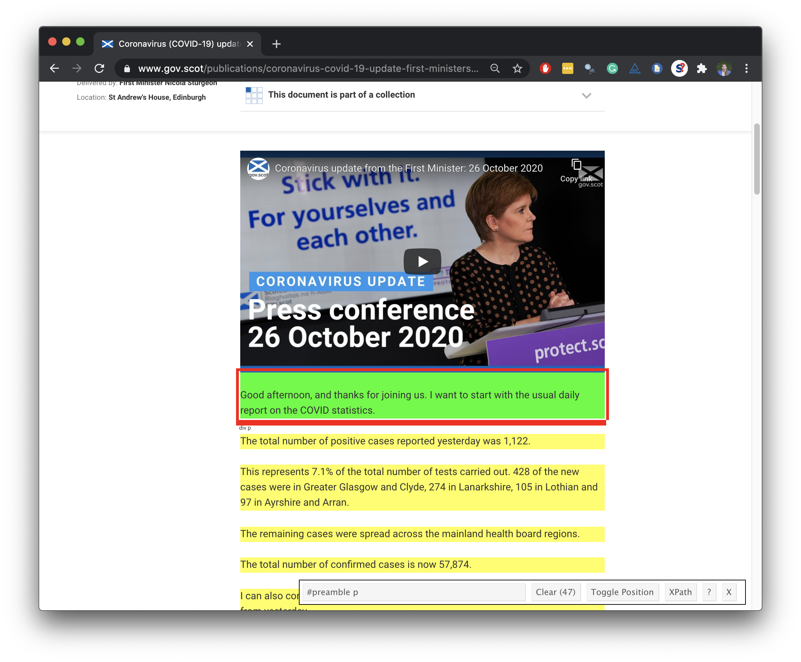

Functions and Iteration
Data Science in a Box
Cornell College
DSC 223 - Fall 2022
October 10th, 2022
Functions
First Minister’s COVID speeches
üèÅ Start with

End with üõë
# A tibble: 218 x 6
title date locat~1 abstr~2 text url
<chr> <date> <chr> <chr> <chr> <chr>
1 Coronavirus (COVID-19) update: First ~ 2021-04-20 St And~ Statem~ "Goo~ http~
2 Coronavirus (COVID-19) update: First ~ 2021-04-13 St And~ Statem~ "Tha~ http~
3 Coronavirus (COVID-19) update: First ~ 2021-04-06 St And~ Statem~ "Goo~ http~
4 Coronavirus (COVID-19) update: First ~ 2021-03-30 St And~ Statem~ "Tha~ http~
5 Coronavirus (COVID-19) update: First ~ 2021-03-24 Scotti~ Statem~ "Tha~ http~
6 Coronavirus (Covid-19) update: First ~ 2021-03-23 The Sc~ Statem~ "Pre~ http~
7 Coronavirus (COVID-19) update: First ~ 2021-03-18 Scotti~ Statem~ "Tha~ http~
8 Coronavirus (COVID-19) update: First ~ 2021-03-17 St And~ Statem~ "\nG~ http~
9 Coronavirus (COVID-19) update: First ~ 2021-03-16 Scotti~ Statem~ "Pre~ http~
10 Coronavirus (COVID-19) update: First ~ 2021-03-15 St And~ Statem~ "\nG~ http~
11 Coronavirus (COVID-19) update: First ~ 2021-03-11 Scotti~ Statem~ "I c~ http~
12 Coronavirus (COVID-19) update: First ~ 2021-03-09 Scotti~ Statem~ "Pre~ http~
13 Coronavirus (COVID-19) update: First ~ 2021-03-05 Scotti~ Parlia~ "Hel~ http~
14 Coronavirus (COVID-19) update: First ~ 2021-03-04 Scotti~ Parlia~ "I w~ http~
15 Coronavirus (COVID-19) update: First ~ 2021-03-02 Scotti~ Statem~ "Pre~ http~
# ... with 203 more rows, and abbreviated variable names 1: location,
# 2: abstractFirst Minister’s Speaches

What do we want?

Plan
Scrape
title,date,location,abstract, andtextfrom a few COVID-19 speech pages to develop the codeWrite a function that scrapes
title,date,location,abstract, andtextfrom COVID-19 speech pagesScrape the
urls of COVID-19 speeches from the main pageUse this function to scrape from each individual COVID-19 speech from these
urls and create a data frame with the columnstitle,date,location,abstract,text, andurl
Scrape data from a few COVID-19 speech pages
Read page for 26 Oct speech
Extract title

Extract date
Extract location

Extract abstract

Extract text
[[1]]
[1] "\r\nGood afternoon, and thanks for joining us. I want to start with the usual daily report on the COVID statistics."
[2] "The total number of positive cases reported yesterday was 1,122."
[3] "This represents 7.1% of the total number of tests carried out. 428 of the new cases were in Greater Glasgow and Clyde, 274 in Lanarkshire, 105 in Lothian and 97 in Ayrshire and Arran. "
[4] "The remaining cases were spread across the mainland health board regions. "
[5] "The total number of confirmed cases is now 57,874."
[6] "I can also confirm that 1,152 people are in hospital – that is an increase of 36 from yesterday"
[7] "90 people are in intensive care, which is four more than yesterday."
[8] "And I regret to say that in the last 24 hours, one further death has been registered of a patient who first tested positive over the previous 28 days. It is important though to remember that registration offices tend not to be open as normal over the weekend so the Sunday and Monday figures are often lower."
[9] "We also reported 11 deaths on Saturday, and one yesterday. So since the last briefing on Friday, 13 additional deaths have been registered. That takes the total number of deaths, under this measurement, to 2,701."
[10] "That reminds us again of how dangerous this virus can be and I want to send my condolences to everyone who has lost someone."
[11] "I am joined by the Cabinet Secretary for Health who will say a few words about the Scottish Government’s revised testing strategy and about preparations for winter."
[12] "Firstly, I will give a brief preview of the week ahead, before updating you on one particular issue."
[13] "On Friday, the Scottish Government published our strategic framework for tackling COVID. The framework includes the proposed levels that will apply to different parts of the country, depending on the prevalence of the virus."
[14] "As you recall on Friday we published our strategic framework for tackling COVID."
[15] "That framework included the proposed levels that will apply to different parts of the country, depending on prevalence of the virus."
[16] "Over the weekend, we've discussed the framework with partners and considered further public health advice. These discussions are continuing as are discussions with local councils."
[17] "There are likely to be some clarifications to the detail of the measures we set out on Friday and so we will publish a revised version, ahead of the parliamentary debate that will take place tomorrow."
[18] " And of course we will keep the detail of the levels under ongoing review as the pandemic develops"
[19] "I will also set out more detail ahead of tomorrow's debate on the factors that will guide decisions on which levels apply to different parts of the country."
[20] "And assuming Parliament agrees the draft framework tomorrow, Ministers will decide later in the week on advice from the national incident management team, and our chief advisors and in consultation with local councils, what levels will initially apply in what parts of the country from Monday November 2."
[21] "And I would remind you that in broad terms, the current restrictions in place in the central belt are equivalent to the proposed level three. And those in the rest of the country, broadly equivalent to level two. So for many places there may be no immediate change."
[22] "For an area to come down a level, we want to see a fall in the prevalence of the virus be sustained, not just seen on one or two days."
[23] "And that I think is important and giving business stability but also in giving people confidence that we are not going to take unnecessary risks when we start to lift restrictions."
[24] "So the next few days will see some important decisions which of course will have an impact on all of us."
[25] "I think it is important for context for all of us to remember, given how tough all of this is, that these decisions are one that Scotland is facing in common with countries across these islands, across Europe, and of course, across the world. Many countries are facing having to impose or re-impose tough restrictions, especially on hospitality, as a second wave of COVID takes hold."
[26] "The purpose of adopting tough restrictions just over two weeks ago here was to try to curb the increase in COVID cases that we were seeing before the virus ran further out of control."
[27] "The daily figures I have been reporting recently as I indicated on Friday suggest that these restrictions are starting to have an effect. We do think that the increase in case numbers is slowing but it's not yet in decline, which is why we can't be complacent, but we should take encouragement from the daily numbers at the moment because they suggest that the sacrifices that everybody is making are starting to work."
[28] "Once the new five levels approach is adopted and once people get more familiar with it, which I know will take a bit of time, I hope people will be better able to understand, on an ongoing basis the spread of COVID in their particular area, and also what measures are necessary to tackle it."
[29] "Hopefully that in turn will underline a key point. The best way of moving to a lower level of restrictions – and of living more freely – is to have a lower level of transmission. And the best way we have of driving transmission lower – and keeping it low – is for all of us to stick to the rules that are in place at any given time. That is of course a collective responsibility for all of us."
[30] "The second point I want to highlight is that two more walk-through testing sites have opened in the last few days."
[31] "On Thursday, a new site opened in the centre of Greenock in Inverclyde, and on Saturday, one opened at the Highland Council headquarters in Inverness."
[32] "That means that in total we have 11 walk-through testing sites now open to meet the needs of local communities across Scotland and to try to make access to testing easier for people."
[33] "I want to take this opportunity to thank everyone involved in setting up these sites and all those who are helping to run them."
[34] "This walk-through centres are only part of our testing infrastructure but they are an important way to make testing more accessible in Scotland’s towns and cities. So we will continue to work with partners – including the UK Government - to establish more of them in the weeks and months ahead.."
[35] "It is possible to book a test at a walk-through site by going to the NHS Inform website. Please remember that though they are walk-through sites, you should seek to walk, cycle or drive to them, but do not use public transport to travel to any testing centre."
[36] "If you do not have a car - and cannot walk or cycle - please book a home testing kit through NHS Inform."
[37] "The reason for that, is to ensure you do not transmit the virus on the way to or from the testing centre."
[38] "I would remind everybody again that if you experience an of the symptoms of COVID it is really important to self-isolate immediately and take steps to get tested."
[39] "I want to end, as usual, by stressing the other key rules and guidelines."
[40] "If you live in Lothian, Lanarkshire, Forth Valley, Ayrshire and Arran and Greater Glasgow and Clyde, you should not travel outside those areas unless you have a clear need to do so."
[41] "People living in other parts of Scotland should not travel to these areas unless necessary."
[42] "None of us should be visiting each other’s homes just now, except for very specific purposes such as childcare or looking after a vulnerable person."
[43] "And when we do meet people from other households - outdoors, or at a café - the maximum group size is 6, from a maximum of two households."
[44] "Avoid car-sharing if you can. Work from home if you can. And remember to download the Protect Scotland app, if you haven’t already done so."
[45] "And finally, remember the FACTS – the five rules which will help to remind you how to do the right thing."
[46] "If we all stick to these rules then hopefully the encouraging signs we are seeing in the figures that we are reporting every day will not just continue but accelerate, and a slowing of the increase over the weeks to come will become a decline in the number of daily new cases."
[47] "Thank you all very much." 
Put it all in a data frame
Read page for 23 Oct speech
Extract components of 23 Oct speech
title <- speech_page %>%
html_node(".article-header__title") %>%
html_text()
date <- speech_page %>%
html_node(".content-data__list:nth-child(1) strong") %>%
html_text() %>%
dmy()
location <- speech_page %>%
html_node(".content-data__list+ .content-data__list strong") %>%
html_text()
abstract <- speech_page %>%
html_node(".leader--first-para p") %>%
html_text()
text <- speech_page %>%
html_nodes("#preamble p") %>%
html_text() %>%
list()Put it all in a data frame
oct_23_speech <- tibble(
title = title,
date = date,
location = location,
abstract = abstract,
text = text,
url = url
)
oct_23_speech# A tibble: 1 x 6
title date locat~1 abstr~2 text url
<chr> <date> <chr> <chr> <lis> <chr>
1 Coronavirus (COVID-19) update: First M~ 2020-10-23 St And~ Statem~ <chr> http~
# ... with abbreviated variable names 1: location, 2: abstractFunctions
When should you write a function?

When you’ve copied and pasted a block of code more than twice.
How many times will we need to copy and paste the code we developed to scrape data on all of First Minister’s COVID-19 speeches?

Why functions?
- Automate common tasks in a more powerful and general way than copy-and-pasting:
- Give your function an evocative name that makes your code easier to understand
- As requirements change, only need to update code in one place, instead of many
- Eliminate chance of making incidental mistakes when you copy and paste (i.e. updating a variable name in one place, but not in another)
–
- Down the line: Improve your reach as a data scientist by writing functions (and packages!) that others use
Assuming that the page structure is the same for each speech page, how many “things” do you need to know for each speech page to scrape the data we want from it?
url_23_oct <- "https://www.gov.scot/publications/coronavirus-covid-19-update-first-ministers-speech-23-october/"
speech_page <- read_html(url_23_oct)
title <- speech_page %>%
html_node(".article-header__title") %>%
html_text()
date <- speech_page %>%
html_node(".content-data__list:nth-child(1) strong") %>%
html_text() %>%
dmy()
location <- speech_page %>%
html_node(".content-data__list+ .content-data__list strong") %>%
html_text()
abstract <- speech_page %>%
html_node(".leader--first-para p") %>%
html_text()
text <- speech_page %>%
html_nodes("#preamble p") %>%
html_text() %>%
list()
tibble(
title = title, date = date, location = location,
abstract = abstract, text = text, url= url
)Turn your code into a function
- Pick a short but informative name, preferably a verb.
Turn your code into a function
- Pick a short but evocative name, preferably a verb.
- List inputs, or arguments, to the function inside
function. If we had more the call would look likefunction(x, y, z).
Turn your code into a function
- Pick a short but informative name, preferably a verb.
- List inputs, or arguments, to the function inside
function. If we had more the call would look likefunction(x, y, z). - Place the code you have developed in body of the function, a
{block that immediately followsfunction(...).
scrape_speech()
scrape_speech <- function(url) {
speech_page <- read_html(url)
title <- speech_page %>%
html_node(".article-header__title") %>%
html_text()
date <- speech_page %>%
html_node(".content-data__list:nth-child(1) strong") %>%
html_text() %>%
dmy()
location <- speech_page %>%
html_node(".content-data__list+ .content-data__list strong") %>%
html_text()
abstract <- speech_page %>%
html_node(".leader--first-para p") %>%
html_text()
text <- speech_page %>%
html_nodes("#preamble p") %>%
html_text() %>%
list()
tibble(
title = title, date = date, location = location,
abstract = abstract, text = text, url = url
)
}Function in action
scrape_speech(url = "https://www.gov.scot/publications/coronavirus-covid-19-update-first-ministers-speech-26-october/") %>%
glimpse()Rows: 1
Columns: 6
$ title <chr> NA
$ date <date> NA
$ location <chr> NA
$ abstract <chr> NA
$ text <list> <"\nGood afternoon, and thanks for joining us. I want to star~
$ url <chr> "https://www.gov.scot/publications/coronavirus-covid-19-upda~Function in action
scrape_speech(url = "https://www.gov.scot/publications/coronavirus-covid-19-update-first-ministers-speech-23-october/") %>%
glimpse()Rows: 1
Columns: 6
$ title <chr> NA
$ date <date> NA
$ location <chr> NA
$ abstract <chr> NA
$ text <list> <"\nGood afternoon everyone. Thank you very much for joining ~
$ url <chr> "https://www.gov.scot/publications/coronavirus-covid-19-upda~Function in action
scrape_speech(url = "https://www.gov.scot/publications/coronavirus-covid-19-update-first-ministers-speech-22-october/") %>%
glimpse()Rows: 1
Columns: 6
$ title <chr> NA
$ date <date> NA
$ location <chr> NA
$ abstract <chr> NA
$ text <list> <"\nGood afternoon, let me start as usual with the daily repo~
$ url <chr> "https://www.gov.scot/publications/coronavirus-covid-19-upda~Writing functions
What goes in / what comes out?
- They take input(s) defined in the function definition
- By default they return the last value computed in the function
- You can define more outputs to be returned in a list as well as nice print methods (but we won’t go there for now…)
What is going on here?
Naming functions
“There are only two hard things in Computer Science: cache invalidation and naming things.” - Phil Karlton
Naming functions
- Names should be short but clearly evoke what the function does
- Names should be verbs, not nouns
- Multi-word names should be separated by underscores (
snake_caseas opposed tocamelCase) - A family of functions should be named similarly (
scrape_page(),scrape_speech()ORstr_remove(),str_replace()etc.) - Avoid overwriting existing (especially widely used) functions
Iteration
First Minister’s COVID speeches
üèÅ Start with
End with üõë
# A tibble: 218 x 6
title date locat~1 abstr~2 text url
<chr> <date> <chr> <chr> <chr> <chr>
1 Coronavirus (COVID-19) update: First ~ 2021-04-20 St And~ Statem~ "Goo~ http~
2 Coronavirus (COVID-19) update: First ~ 2021-04-13 St And~ Statem~ "Tha~ http~
3 Coronavirus (COVID-19) update: First ~ 2021-04-06 St And~ Statem~ "Goo~ http~
4 Coronavirus (COVID-19) update: First ~ 2021-03-30 St And~ Statem~ "Tha~ http~
5 Coronavirus (COVID-19) update: First ~ 2021-03-24 Scotti~ Statem~ "Tha~ http~
6 Coronavirus (Covid-19) update: First ~ 2021-03-23 The Sc~ Statem~ "Pre~ http~
7 Coronavirus (COVID-19) update: First ~ 2021-03-18 Scotti~ Statem~ "Tha~ http~
8 Coronavirus (COVID-19) update: First ~ 2021-03-17 St And~ Statem~ "\nG~ http~
9 Coronavirus (COVID-19) update: First ~ 2021-03-16 Scotti~ Statem~ "Pre~ http~
10 Coronavirus (COVID-19) update: First ~ 2021-03-15 St And~ Statem~ "\nG~ http~
11 Coronavirus (COVID-19) update: First ~ 2021-03-11 Scotti~ Statem~ "I c~ http~
12 Coronavirus (COVID-19) update: First ~ 2021-03-09 Scotti~ Statem~ "Pre~ http~
13 Coronavirus (COVID-19) update: First ~ 2021-03-05 Scotti~ Parlia~ "Hel~ http~
14 Coronavirus (COVID-19) update: First ~ 2021-03-04 Scotti~ Parlia~ "I w~ http~
15 Coronavirus (COVID-19) update: First ~ 2021-03-02 Scotti~ Statem~ "Pre~ http~
# ... with 203 more rows, and abbreviated variable names 1: location,
# 2: abstractDefine scrape_speech()
scrape_speech <- function(url) {
speech_page <- read_html(url)
title <- speech_page %>%
html_node(".article-header__title") %>%
html_text()
date <- speech_page %>%
html_node(".content-data__list:nth-child(1) strong") %>%
html_text() %>%
dmy()
location <- speech_page %>%
html_node(".content-data__list+ .content-data__list strong") %>%
html_text()
abstract <- speech_page %>%
html_node(".leader--first-para p") %>%
html_text()
text <- speech_page %>%
html_nodes("#preamble p") %>%
html_text() %>%
list()
tibble(
title = title, date = date, location = location,
abstract = abstract, text = text, url = url
)
}Use scrape_speech()
url_26_oct <- "https://www.gov.scot/publications/coronavirus-covid-19-update-first-ministers-speech-26-october/"
scrape_speech(url = url_26_oct)# A tibble: 1 x 6
title date location abstract text url
<chr> <date> <chr> <chr> <list> <chr>
1 <NA> NA <NA> <NA> <chr [47]> https://www.gov.scot/publications/c~url_23_oct <- "https://www.gov.scot/publications/coronavirus-covid-19-update-first-ministers-speech-23-october/"
scrape_speech(url = url_23_oct)# A tibble: 1 x 6
title date location abstract text url
<chr> <date> <chr> <chr> <list> <chr>
1 <NA> NA <NA> <NA> <chr [134]> https://www.gov.scot/publications/~Inputs
Inputs
You now have a function that will scrape the relevant info on speeches given the URL of the page of the speech. Where can we get a list of URLs of each of the speeches?

All URLs
all_speeches_page <- read_html("https://www.gov.scot/collections/first-ministers-speeches/")
all_speeches_page %>%
html_nodes(".collections-list a") %>%
html_attr("href") [1] "/publications/motion-condolence/"
[2] "/publications/tribute-majesty-queen/"
[3] "/publications/programme-government-2022-2023-first-ministers-speech/"
[4] "/publications/scotwind-supply-chain-summit-first-ministers-speech/"
[5] "/publications/support-tech-scalers-first-ministers-speech-barclays-event-13-july-2022/"
[6] "/publications/royal-highland-show-first-ministers-speech-quality-meat-scotland-breakfast-event-24-june-2022/"
[7] "/publications/ministerial-statement-independence-referendum/"
[8] "/publications/gathering-first-ministers-speech-15-june-2022/"
[9] "/publications/scdi-forum-first-ministers-speech-13-june-2022/"
[10] "/publications/queens-platinum-jubilee-debate-first-ministers-statement/"
[11] "/publications/federation-small-businesses-awards-2022-first-ministers-speech-19-2022/"
[12] "/publications/scotlands-place-world-first-ministers-speech-16-2022-1/"
[13] "/publications/energy-conference-first-ministers-speech-11-2022/"
[14] "/publications/fm-statement-parliament-march-30-2022/"
[15] "/publications/first-minister-speech-national-economic-forum-2022/"
[16] "/publications/ukraine-update-first-ministers-statement-16-march-2022/"
[17] "/publications/fm-statement-parliament-march-15-2022/"
[18] "/publications/international-womens-day-2022-first-ministers-statement-8-march-2022/"
[19] "/publications/solidarity-ukraine-debate-first-ministers-statement/"
[20] "/publications/cosla-conference-2022-first-ministers-speech/"
[21] "/publications/coronavirus-covid-19-update-first-ministers-speech-tuesday-22-february-2022/"
[22] "/publications/coronavirus-covid-19-update-first-ministers-statement-8-february-2022/"
[23] "/publications/coronavirus-covid-19-update-first-ministers-statement-1-february-2022/"
[24] "/publications/coronavirus-covid-19-update-first-ministers-statement-25-january-2022/"
[25] "/publications/coronavirus-covid-19-update-first-ministers-statement-18-january-2022/"
[26] "/publications/coronavirus-covid-19-update-first-ministers-statement-11-january-2022/"
[27] "/publications/coronavirus-covid-19-update-first-ministers-statement-5-january-2022/"
[28] "/publications/first-minister-update/"
[29] "/publications/coronavirus-covid-19-update-first-ministers-statement-21-december-2021/"
[30] "/publications/coronavirus-covid-19-update-first-ministers-speech-17-december-2021/"
[31] "/publications/coronavirus-covid-19-update-first-ministers-statement-14-december-2021/"
[32] "/publications/coronavirus-covid-19-update-first-ministers-speech-10-december-2021/"
[33] "/publications/coronavirus-covid-19-update-first-ministers-statement-7-december-2021/"
[34] "/publications/coronavirus-covid-19-update-first-ministers-statement-30-november-2021/"
[35] "/publications/coronavirus-covid-19-update-first-ministers-speech-29-november-2021/"
[36] "/publications/coronavirus-covid-19-update-first-ministers-statement-23-november-2021/"
[37] "/publications/first-ministers-statement-cop26/"
[38] "/publications/coronavirus-covid-19-update-first-ministers-statement-16-november-2021/"
[39] "/publications/first-minister-speech-43rd-t-b-macaulay-lecture/"
[40] "/publications/global-assembly-cop26-first-ministers-speech-1-november-2021/"
[41] "/publications/first-ministers-speech-before-start-cop26-1/"
[42] "/publications/coronavirus-covid-19-update-first-ministers-statement-26-october-2021/"
[43] "/publications/first-ministers-speech-scotlands-priorities-cop26/"
[44] "/publications/arctic-circle-assembly-2021-first-ministers-speech/"
[45] "/publications/coronavirus-covid-19-update-first-ministers-statement-5-october-2021/"
[46] "/publications/coronavirus-covid-19-update-first-ministers-statement-28-september-2021/"
[47] "/publications/coronavirus-covid-19-update-first-ministers-statement-21-september-2021/"
[48] "/publications/coronavirus-covid-19-update-first-ministers-statement-14-september-2021/"
[49] "/publications/coronavirus-covid-19-update-first-ministers-statement-8-september-2021/"
[50] "/publications/first-minister-programme-government-2021-2022/"
[51] "/publications/coronavirus-covid-19-update-first-ministers-statement-1-september-2021/"
[52] "/publications/agreement-scottish-green-party-first-ministers-statement-31-august-2021/"
[53] "/publications/coronavirus-covid-19-update-first-ministers-statement-24-august-2021/"
[54] "/publications/coronavirus-covid-19-update-first-ministers-statement-3-august-2021-1/"
[55] "/publications/coronavirus-covid-19-update-first-ministers-speech-27-july-2021/"
[56] "/publications/coronavirus-covid-19-update-first-ministers-statement-20-july-2021/"
[57] "/publications/coronavirus-covid-19-update-first-ministers-statement-13-july-2021/"
[58] "/publications/coronavirus-covid-19-update-first-ministers-speech-thursday-8-july-2021/"
[59] "/publications/coronavirus-covid-19-update-first-ministers-speech-friday-2-july-2021/"
[60] "/publications/coronavirus-covid-19-update-first-ministers-statement-29-june-2021/"
[61] "/publications/coronavirus-covid-19-update-first-ministers-statement-22-june-2021/"
[62] "/publications/coronavirus-covid-19-update-first-ministers-statement-18-june-2021/"
[63] "/publications/national-economic-forum-first-minister-opening-address-16-june-2021/"
[64] "/publications/coronavirus-covid-19-update-first-ministers-statement-15-june-2021/"
[65] "/publications/coronavirus-covid-19-update-first-ministers-statement-8-june-2021/"
[66] "/publications/coronavirus-covid-19-update-first-ministers-statement-4-june-2021/"
[67] "/publications/coronavirus-covid-19-update-first-ministers-statement-1-june-2021/"
[68] "/publications/coronavirus-covid-19-update-first-ministers-statement-28-2021/"
[69] "/publications/priorities-government-statement-26-2021/"
[70] "/publications/coronavirus-covid-19-update-first-ministers-statement-25-2021/"
[71] "/publications/coronavirus-covid-19-update-first-ministers-statement-21-2021/"
[72] "/publications/coronavirus-covid-19-update-first-ministers-statement-11-2021/"
[73] "/publications/coronavirus-covid-19-update-first-ministers-statement-20-april-2021/"
[74] "/publications/coronavirus-covid-19-update-first-ministers-statement-13-april-2021/"
[75] "/publications/coronavirus-covid-19-update-first-ministers-statement-6-april-2021/"
[76] "/publications/coronavirus-covid-19-update-first-ministers-statement-30-march-2021/"
[77] "/publications/coronavirus-covid-19-update-first-ministers-statement-24-march-2021/"
[78] "/publications/coronavirus-covid-19-update-first-ministers-statement-23-march-2021/"
[79] "/publications/coronavirus-covid-19-update-first-ministers-statement-18-march-2021/"
[80] "/publications/coronavirus-covid-19-update-first-ministers-statement-17-march-2021/"
[81] "/publications/coronavirus-covid-19-update-march-16-2021/"
[82] "/publications/coronavirus-covid-19-update-first-ministers-statement-15-march-2021/"
[83] "/publications/coronavirus-covid-19-update-first-ministers-statement-11-march-2021/"
[84] "/publications/coronavirus-covid-19-update-first-ministers-statement-9-march-2021/"
[85] "/publications/race-zero-event-first-ministers-speech/"
[86] "/publications/coronavirus-covid-19-update-first-ministers-statement-5-march-2021/"
[87] "/publications/coronavirus-covid-19-update-first-ministers-statement-4-march-2021/"
[88] "/publications/coronavirus-covid-19-update-first-ministers-statement-2-march-2021/"
[89] "/publications/coronavirus-covid-19-update-first-ministers-statement-25-february-2021/"
[90] "/publications/coronavirus-covid-19-update-first-ministers-statement-wednesday-24-february-2021/"
[91] "/publications/coronavirus-covid-19-update-first-ministers-statement-23-february-2021/"
[92] "/publications/coronavirus-covid-19-update-first-ministers-statement-monday-22-february-2021/"
[93] "/publications/coronavirus-covid-19-update-first-ministers-statement-thursday-18-february-2021/"
[94] "/publications/coronavirus-covid-19-update-first-ministers-statement-17-february-2021/"
[95] "/publications/coronavirus-covid-19-update-first-ministers-statement-16-february-2021/"
[96] "/publications/coronavirus-covid-19-update-first-ministers-statement-monday-15-february-2021/"
[97] "/publications/coronavirus-covid-19-update-first-ministers-speech-thursday-11-february-2021/"
[98] "/publications/coronavirus-covid-19-update-first-ministers-statement-10-february-2021/"
[99] "/publications/coronavirus-covid-19-update-first-ministers-statement-9-february-2021/"
[100] "/publications/coronavirus-covid-19-update-first-ministers-statement-8-february-2021/"
[101] "/publications/coronavirus-covid-19-update-first-ministers-statement-4-february-2021/"
[102] "/publications/coronavirus-covid-19-update-first-ministers-statement-3-february-2021/"
[103] "/publications/coronavirus-covid-19-update-first-ministers-statement-2-february-2021/"
[104] "/publications/coronavirus-covid-19-update-first-ministers-statement-01-february-2021/"
[105] "/publications/coronavirus-covid-19-update-first-ministers-statement-28-january-2021/"
[106] "/publications/coronavirus-covid-19-update-first-ministers-statement-27-january-2021/"
[107] "/publications/coronavirus-covid-19-update-first-ministers-statement-25-january-2021/"
[108] "/publications/update-drugs-policy/"
[109] "/publications/coronavirus-covid-19-update-first-ministers-statement-20-january-2021/"
[110] "/publications/20210119fm-chamber-rmrks/"
[111] "/publications/coronavirus-covid-19-update-first-ministers-statement-18-january-2021/"
[112] "/publications/coronavirus-covid-19-update-first-ministers-statement-thursday-14-january-2021/"
[113] "/publications/coronavirus-covid-19-update-first-ministers-statement-13-january-2021/"
[114] "/publications/coronavirus-covid-19-update-first-ministers-statement-12-january-2021/"
[115] "/publications/coronavirus-covid-19-update-first-ministers-statement-monday-11-january-2021/"
[116] "/publications/coronavirus-covid-19-update-first-ministers-statement-8-january-2021/"
[117] "/publications/coronavirus-covid-19-update-first-ministers-statement-thursday-7-january-2021/"
[118] "/publications/coronavirus-covid-19-update-first-ministers-speech-5-january-2021/"
[119] "/publications/coronavirus-covid-19-update-first-ministers-statement-monday-4-january-2021/"
[120] "/publications/coronavirus-covid-19-update-first-ministers-statement-30-december-2020/"
[121] "/publications/brexit-deal-statement-first-minister-nicola-sturgeon/"
[122] "/publications/coronavirus-covid-19-update-first-ministers-statement-22-december-2020/"
[123] "/publications/statement-closure-french-border-uk-freight/"
[124] "/publications/coronavirus-covid-19-update-first-ministers-speech-21-december/"
[125] "/publications/coronavirus-covid-19-update-first-ministers-speech/"
[126] "/publications/coronavirus-covid-19-update-first-ministers-speech-tuesday-16-december-2020/"
[127] "/publications/coronavirus-covid-19-update-first-ministers-statement-15-december-2020/"
[128] "/publications/coronavirus-covid-19-update-first-ministers-speech-monday-14-december-2020-1/"
[129] "/publications/coronavirus-covid-19-update-first-ministers-speech-friday-11-december-2020/"
[130] "/publications/coronavirus-covid-19-update-first-ministers-speech-9-december-2020/"
[131] "/publications/first-ministers-statement-scottish-parliament-covid-19-tuesday-8-december-2020/"
[132] "/publications/coronavirus-covid-19-update-first-ministers-speech-7-december-2020/"
[133] "/publications/coronavirus-covid-19-update-first-ministers-speech-2-december-2020/"
[134] "/publications/first-minister-speech-20201201-parliamentary-statement-covid-19/"
[135] "/publications/coronavirus-covid-19-update-first-ministers-speech-30112020/"
[136] "/publications/coronavirus-covid-19-update-first-ministers-speech-25-november-2020/"
[137] "/publications/coronavirus-covid-19-update-first-ministers-statement-tuesday-24-november-2020/"
[138] "/publications/coronavirus-covid-19-update-first-ministers-statement-monday-23-november-2020/"
[139] "/publications/coronavirus-covid-19-update-first-ministers-statement-friday-20-november-2020/"
[140] "/publications/coronavirus-covid-19-update-first-ministers-statement-wednesday-18-november-2020/"
[141] "/publications/coronavirus-covid-19-update-first-ministers-statement-tuesday-17-november-2020/"
[142] "/publications/coronavirus-covid-19-update-first-ministers-statement-monday-16-november-2020/"
[143] "/publications/coronavirus-covid-19-update-first-ministers-statement-wednesday-11-november-2020/"
[144] "/publications/coronavirus-covid-19-update-first-ministers-speech-10-november-2020/"
[145] "/publications/coronavirus-covid-19-update-first-ministers-statement-monday-9-november-2020/"
[146] "/publications/coronavirus-covid-19-update-first-ministers-statement-friday-6-november-2020/"
[147] "/publications/coronavirus-covid-19-update-first-ministers-statement-4-november-2020/"
[148] "/publications/coronavirus-covid-19-update-first-ministers-statement-3-november-2020/"
[149] "/publications/coronavirus-covid-19-update-first-ministers-speech-02-november/"
[150] "/publications/coronavirus-covid-19-update-first-ministers-statement-31-october-2020/"
[151] "/publications/sir-sean-connery-tribute-first-minister/"
[152] "/publications/coronavirus-covid-19-update-deputy-first-ministers-speech-30-october/"
[153] "/publications/coronavirus-covid-19-update-parliament-29-october/"
[154] "/publications/coronavirus-covid-19-update-first-ministers-speech-28-october/"
[155] "/publications/scottish-government-debate-covid-19-scotlands-strategic-framework/"
[156] "/publications/coronavirus-covid-19-update-first-ministers-speech-26-october/"
[157] "/publications/coronavirus-covid-19-update-first-ministers-speech-23-october/"
[158] "/publications/coronavirus-covid-19-update-first-ministers-speech-22-october/"
[159] "/publications/coronavirus-covid-19-update-first-ministers-speech-21-october/"
[160] "/publications/coronavirus-covid-19-update-first-ministers-speech-20-october/"
[161] "/publications/coronavirus-covid-19-update-first-ministers-speech-19-october/"
[162] "/publications/coronavirus-covid-19-update-first-ministers-speech-16-october-2020/"
[163] "/publications/coronavirus-covid-19-update-first-ministers-speech-15-october-2020/"
[164] "/publications/coronavirus-covid-19-update-first-ministers-speech-14-october-2020/"
[165] "/publications/coronavirus-covid-19-update-first-ministers-speech-13-october-2020/"
[166] "/publications/coronavirus-covid-19-update-first-ministers-speech-12-october-2020/"
[167] "/publications/coronavirus-covid-19-update-first-ministers-speech-9-october-2020/"
[168] "/publications/coronavirus-covid-19-update-first-ministers-speech-7-october-2020/"
[169] "/publications/coronavirus-covid-19-update-first-ministers-speech-6-october-2020/"
[170] "/publications/coronavirus-covid-19-update-first-ministers-speech-5-october-2020/"
[171] "/publications/coronavirus-covid-19-update-first-ministers-speech-2-october-2020/"
[172] "/publications/coronavirus-covid-19-update-first-ministers-speech-30-september-2020/"
[173] "/publications/coronavirus-covid-19-update-first-ministers-speech-29-september-2020/"
[174] "/publications/coronavirus-covid-19-update-first-ministers-speech-28-september-2020/"
[175] "/publications/coronavirus-covid-19-update-first-ministers-speech-25-september-2020/"
[176] "/publications/coronavirus-covid-19-update-first-ministers-speech-23-september-2020/"
[177] "/publications/coronavirus-covid-19-update-first-ministers-speech-22-september-2020/"
[178] "/publications/coronavirus-covid-19-update-first-ministers-speech-21-september-2020/"
[179] "/publications/coronavirus-covid-19-update-first-ministers-speech-18-september-2020/"
[180] "/publications/coronavirus-covid-19-update-first-ministers-speech-16-september-2020/"
[181] "/publications/coronavirus-covid-19-update-first-ministers-speech-15-september-2020/"
[182] "/publications/coronavirus-covid-19-update-first-ministers-speech-14-september-2020/"
[183] "/publications/coronavirus-covid-19-update-first-ministers-speech-11-september-2020/"
[184] "/publications/coronavirus-covid-19-update-first-ministers-speech-9-september-2020/"
[185] "/publications/coronavirus-covid-19-update-first-ministers-speech-8-september-2020/"
[186] "/publications/coronavirus-covid-19-update-first-ministers-speech-7-september-2020/"
[187] "/publications/coronavirus-covid-19-update-first-ministers-speech-3-september-2020/"
[188] "/publications/first-minister-programme-government-1/"
[189] "/publications/coronavirus-covid-19-update-first-ministers-speech-31-august-2020/"
[190] "/publications/coronavirus-covid-19-update-first-ministers-speech-28-august-2020/"
[191] "/publications/coronavirus-covid-19-update-first-ministers-speech-27-august-2020/"
[192] "/publications/coronavirus-covid-19-update-first-ministers-speech-25-august-2020/"
[193] "/publications/coronavirus-covid-19-update-first-ministers-speech-24-august-2020/"
[194] "/publications/coronavirus-covid-19-first-ministers-speech-21-august-2020/"
[195] "/publications/coronavirus-covid-19-update-first-ministers-speech-20-august-2020/"
[196] "/publications/coronavirus-covid-19-update-first-ministers-speech-19-august-2020/"
[197] "/publications/coronavirus-covid-19-update-first-ministers-speech-18-august-2020/"
[198] "/publications/coronavirus-covid-19-update-first-ministers-speech-17-august-2020/"
[199] "/publications/coronavirus-covid-19-update-first-ministers-speech-14-august-2020/"
[200] "/publications/coronavirus-covid-19-update-first-ministers-speech-08-june-2020/"
[201] "/publications/coronavirus-covid-19-update-first-ministers-speech-11-august-2020/"
[202] "/publications/coronavirus-covid-19-update-first-ministers-speech-10-august-2020/"
[203] "/publications/coronavirus-covd-19-update-first-ministers-speech-7-august-2020/"
[204] "/publications/coronavirus-covid-19-update-first-ministers-speech-6-august-2020/"
[205] "/publications/coronavirus-covid-19-update-first-ministers-speech-5-august-2020/"
[206] "/publications/coronavirus-covid-19-update-first-ministers-speech-4-august-2020/"
[207] "/publications/coronavirus-covid-19-update-first-ministers-speech-3-august-2020/"
[208] "/publications/coronavirus-covid-19-update-first-ministers-speech-31st-july/"
[209] "/publications/coronavirus-covid-19-update-first-ministers-speech-29-july-2020/"
[210] "/publications/coronavirus-covid-19-update-first-ministers-speech-28-july-2020/"
[211] "/publications/coronavirus-covid-19-update-first-ministers-speech-23-july-2020/"
[212] "/publications/coronavirus-covid-19-update-first-ministers-speech-22-july-2020/"
[213] "/publications/coronavirus-covid-19-update-first-ministers-speech-21-july-2020/"
[214] "/publications/coronavirus-covid-19-update-first-ministers-speech-16-july-2020/"
[215] "/publications/coronavirus-covid-19-update-first-ministers-speech-15-july-2020/"
[216] "/publications/coronavirus-covid-19-update-first-ministers-speech-14-july-2020/"
[217] "/publications/coronavirus-covid-19-update-first-ministers-speech-13-july-2020/"
[218] "/publications/coronavirus-covid-19-update-first-ministers-speech-10-july-2020/"
[219] "/publications/coronavirus-covid-19-update-first-ministers-speech-8-july-2020/"
[220] "/publications/coronavirus-covid-19-update-first-ministers-speech-7-july-2020/"
[221] "/publications/coronavirus-covid-19-update-first-ministers-speech-6-july-2020/"
[222] "/publications/coronavirus-covid-19-update-first-ministers-speech-3-july-2020/"
[223] "/publications/coronavirus-covid-19-update-first-ministers-speech-2-july-2020/"
[224] "/publications/coronavirus-covid-19-update-first-ministers-speech-1-july-2020/"
[225] "/publications/coronavirus-covid-19-update-first-ministers-speech-30-june-2020/"
[226] "/publications/coronavirus-covid-19-update-first-ministers-speech-29-june-2020/"
[227] "/publications/coronavirus-covid-19-update-first-ministers-speech-26-june-2020/"
[228] "/publications/coronavirus-covid-19-update-first-ministers-speech-25-june-2020/"
[229] "/publications/coronavirus-covid-19-update-first-ministers-speech-24-june-2020/"
[230] "/publications/coronavirus-covid-19-update-first-ministers-speech-23-june-2020/"
[231] "/publications/coronavirus-covid-19-update-first-ministers-speech-22-june-2020/"
[232] "/publications/coronavirus-covid-19-update-first-ministers-speech-19-june-2020/"
[233] "/publications/coronavirus-covid-19-update-first-ministers-speech-16-june-2020/"
[234] "/publications/coronavirus-covid-19-update-first-ministers-speech-15-june-2020/"
[235] "/publications/coronavirus-covid-19-update-first-ministers-speech-08-june-2020-1/"
[236] "/publications/coronavirus-covid-19-update-first-ministers-speech-12-june-2020/"
[237] "/publications/coronavirus-covid-19-update-first-ministers-speech-11-june-2020/"
[238] "/publications/coronavirus-covid-19-update-first-ministers-speech-09-june-2020/"
[239] "/publications/coronavirus-covid-19-update-first-ministers-speech-08-june-2020-2/"
[240] "/publications/coronavirus-covid-19-update-first-ministers-speech-05-june-2020/"
[241] "/publications/coronavirus-covid-19-update-first-ministers-speech-04-june-2020/"
[242] "/publications/coronavirus-covid-19-update-first-ministers-speech-02-june-2020/"
[243] "/publications/coronavirus-covid-19-update-first-ministers-speech-01-june-2020/"
[244] "/publications/coronavirus-covid-19-update-first-ministers-speech-29-2020/"
[245] "/publications/coronavirus-covid-19-update-first-ministers-speech-28-2020/"
[246] "/publications/coronavirus-covid-19-update-first-ministers-speech-26-2020/"
[247] "/publications/coronavirus-covid-19-update-first-ministers-speech-25-2020/"
[248] "/publications/coronavirus-covid-19-update-first-ministers-speech-22-2020/"
[249] "/publications/coronavirus-covid-19-update-first-ministers-speech-21-2020/"
[250] "/publications/coronavirus-covid-19-update-first-ministers-speech-19-2020/"
[251] "/publications/coronavirus-covid-19-update-first-ministers-speech-18-2020/"
[252] "/publications/coronavirus-covid-19-update-first-ministers-speech-14-2020/"
[253] "/publications/coronavirus-covid-19-update-first-minister-speech-14-2020/"
[254] "/publications/coronavirus-covid-19-update-first-ministers-speech-12-2020/"
[255] "/publications/first-minister-address-nation-11-2020/"
[256] "/publications/coronavirus-covid-19-update-first-ministers-speech-11-2020/"
[257] "/publications/coronavirus-covid-19-update-first-ministers-speech-10-2020/"
[258] "/publications/coronavirus-covid-19-update-first-ministers-speech-08-2020/"
[259] "/publications/coronavirus-covid-19-update-first-minister-speech-7-may-2020/"
[260] "/publications/coronavirus-covid-19-first-ministers-speech-5-2020/"
[261] "/publications/coronavirus-covid-19/"
[262] "/publications/coronavirus-covid-19-update-first-ministers-speech-1-2020/"
[263] "/publications/coronavirus-covid-19-update-first-ministers-speech-30-april-2020/"
[264] "/publications/coronavirus-covid-19-update-first-ministers-speech-29-april-2020/"
[265] "/publications/coronavirus-covid-19-update-first-ministers-speech-27-april-2020-1/"
[266] "/publications/coronavirus-covid-19-update-first-ministers-speech-27-april-2020/"
[267] "/publications/coronavirus-covid-19-update-first-ministers-speech-friday-24-april/"
[268] "/publications/coronavirus-covid-19-update-first-ministers-speech-23-april/"
[269] "/publications/coronavirus-covid-19-update-first-ministers-speech-22-april/"
[270] "/publications/coronavirus-covid-19-update-first-ministers-speech-21-april-2020/"
[271] "/publications/first-minister-covid-19-update-20-april-2020/"
[272] "/publications/health-secretary-covid-19-update-19-april-2020/"
[273] "/publications/first-minister-covid-19-update-17-april-2020/"
[274] "/publications/first-minister-covid-19-update-17/"
[275] "/publications/coronavirus-covid-19-update-first-ministers-speech-15-april-2020/"
[276] "/publications/first-minister-covid-19-update-16/"
[277] "/publications/coronavirus-covid-19-update-first-ministers-speech-13-april-2020/"
[278] "/publications/coronavirus-covid-19-update-health-secretary-12-april-2020/"
[279] "/publications/first-minister-covid-19-update-8/"
[280] "/publications/first-minister-covid-19-update-7/"
[281] "/publications/first-minister-covid-19-update-14/"
[282] "/publications/first-minister-covid-19-update-13/"
[283] "/publications/first-minister-covid-19-update-12/"
[284] "/publications/first-minister-covid-19-update-11/"
[285] "/publications/first-minister-covid-19-update-9/"
[286] "/publications/first-minister-covid-19-update-10/"
[287] "/publications/first-minister-covid-19-update-15/"
[288] "/publications/first-minister-covid-19-update-6/"
[289] "/publications/first-minister-covid-19-update-5/"
[290] "/publications/ministerial-statement-on-access-rights-during-covid-19/"
[291] "/publications/first-minister-covid-19-update-4/"
[292] "/publications/first-minister-covid-19-update-3/"
[293] "/publications/first-minister-covid-19-update-2/"
[294] "/publications/first-ministers-update-covid-19/"
[295] "/publications/first-minister-covid-19-update-1/"
[296] "/publications/coronavirus-covid-19-update-first-ministers-speech-22-march-2020/"
[297] "/publications/first-minister-covid-19-update/"
[298] "/publications/fm-covid-19/"
[299] "/publications/european-policy-centre-first-ministers-speech/"
[300] "/publications/statement-report-independent-care-review/"
[301] "/publications/wellbeing-economy-alliance-conference/"
[302] "/publications/plan-scottish-visa/"
[303] "/publications/lord-mayors-burns-supper-first-ministers-speech/"
[304] "/publications/national-advisory-council-on-women-and-girls-circle-event-first-ministers-speech/"
[305] "/publications/first-ministers-speech-at-georgetown-university/"
[306] "/publications/first-ministers-speech-at-french-national-assembly/"
[307] "/publications/scvo-gathering-2019-first-ministers-speech/"
[308] "/publications/scotlands-international-marine-conference-2019-first-ministers-speech/"
[309] "/publications/women-in-business-first-ministers-international-womens-day-speech/"
[310] "/publications/first-minister-speech-intergovernmental-panel-climate-change-evening-reception/"
[311] "/publications/stuc-first-ministers-speech/"
[312] "/publications/first-minister-statement-brexit-scotlands-future/"
[313] "/publications/wellbeing-economy-governments-wego-policy-labs/"
[314] "/publications/trading-nation-launch-national-economic-forum/"
[315] "/publications/first-minister-speech-awpr/"
[316] "/publications/first-minister-speech-general-assembly-church-scotland/"
[317] "/publications/made-scotland-brussels-launch/"
[318] "/publications/fm-brexit-beyond-next-scottish-eu-relations/"
[319] "/publications/fm-20-years-devolution/"
[320] "/publications/fm-royal-highland-show/"
[321] "/publications/fm-20-years-devolution-scotlands-parliament/"
[322] "/publications/fm-world-forum-climate-justice/"
[323] "/publications/fm-northern-lights/"
[324] "/publications/fm-programme-government/"
[325] "/publications/fm-solheim-cup/"
[326] "/publications/fm-cosla-annual-conference/"
[327] "/publications/fm-press-conference-welsh-fm-london/"
[328] "/publications/hampton-alexander-review-speech/"
[329] "/publications/scotlands-place-in-europe-speech/"
[330] "/publications/scotlands-disabled-peoples-annual-summit/"
[331] "/publications/scotland-after-brexit/"
[332] "/publications/celebrating-100-years-womens-right-to-vote-debate-speech/"
[333] "/publications/care-day-speech/"
[334] "/publications/scvo-the-gathing-speech/"
[335] "/publications/association-of-british-insurers-annual-conference/"
[336] "/publications/scottish-renewables-annual-conference-speech/"
[337] "/publications/first-ministers-speech-with-unicef-on-child-poverty/"
[338] "/publications/first-minister-speech-at-economist-event-on-inclusive-growth/"
[339] "/publications/first-ministers-speech-at-all-energy-conference/"
[340] "/publications/first-ministers-speech-at-news-uk-scotland-in-business/"
[341] "/publications/cardinal-winning-lecture/"
[342] "/publications/launch-of-national-performance-framework-2018/"
[343] "/publications/futurefest-conference-first-ministers-speech/"
[344] "/publications/programme-for-government-first-ministers-speech/"
[345] "/publications/first-ministers-speech-at-cbi-scotland-annual-dinner/"
[346] "/publications/scotlands-international-development-alliance-annual-conference-first-ministers-speech/"
[347] "/publications/first-ministers-speech-at-scottish-tourism-alliance/"
[348] "/publications/convention-of-scottish-local-authorities-conference-2018-first-ministers-speech/"
[349] "/publications/first-ministers-speech-at-the-royal-society-of-arts/"
[350] "/publications/circular-economy-hotspot-first-ministers-speech/"
[351] "/publications/national-economic-forum---november-2018-first-ministers-speech/"
[352] "/publications/nfus-agm-2017-fm-address/"
[353] "/publications/first-ministers-speech-bute-house-march-2017/"
[354] "/publications/scotlands-choice-second-independence-referendum-debate-day-two/"
[355] "/publications/scotlands-place-in-the-world-first-ministers-stanford-university-speech/"
[356] "/publications/womens-role-in-conflict-resolution-fm-un-speech/"
[357] "/publications/importance-of-truth-in-political-debate/"
[358] "/publications/scotlands-energy-future-fm-speech-all-energy-conference/"
[359] "/publications/national-economic-forum-2017-first-ministers-speech/"
[360] "/publications/security-scotland-statement-scottish-parliament-following-manchester-attack/"
[361] "/publications/london-bridge-terror-attack-first-ministers-statement/"
[362] "/publications/oil-gas-uk-conference-2017-first-ministers-speech/"
[363] "/publications/royal-highland-show-2017-first-ministers-speech/"
[364] "/publications/eu-negotiations-and-scotlands-future-first-ministers-speech/"
[365] "/publications/diversity-in-the-media-first-ministers-speech/"
[366] "/publications/scotlands-economy-first-ministers-speech-to-spirit-aerosystems/"
[367] "/publications/programme-for-government-2017-2018-first-ministers-speech/"
[368] "/publications/first-ministers-speech-dublin-chamber-of-commerce/"
[369] "/publications/first-ministers-speech-arctic-circle-assembly/"
[370] "/publications/inclusive-growth-first-ministers-speech/"
[371] "/publications/first-ministers-speech-at-institute-for-new-economic-thinking-conference/"
[372] "/publications/unlocking-ambition-challenge-speech/"
[373] "/publications/the-role-of-income-tax-speech/"
[374] "/publications/cross-border-rail-improvements-ministers-speech/"
[375] "/publications/historical-sexual-offences-pardons-disregards-scotland-bill-ministers-statement/"
[376] "/publications/global-climate-action-closing-speech/"
[377] "/publications/arctic-circle-forum-scotland-speech/"
[378] "/publications/world-forum-natural-capital-speech/"
[379] "/publications/parliamentary-statement-on-policing-ministers-statement/"
[380] "/publications/st-andrews-day-message/"
[381] "/publications/scottish-chambers-of-commerce-annual-dinner-speech/"
[382] "/publications/national-economic-forum-ministers-speech/"
[383] "/publications/coronavirus-covid-19-update-first-ministers-statement-15-december-2020/"
[384] "/publications/first-minister-speech-priorities-for-government/"
[385] "/publications/scottish-leaders-forum-first-ministers-speech/"
[386] "/publications/first-minister-eu-referendum-result/"
[387] "/publications/official-opening-scottish-parliament/"
[388] "/publications/scotland-european-union/"
[389] "/publications/ask-fm-cabinet-eu-nationals-event/"
[390] "/publications/first-ministers-press-conference/"
[391] "/publications/first-minister-statement-programme-government/"
[392] "/publications/update-european-union/"
[393] "/publications/institute-of-directors-annual-convention-2016-first-ministers-speech/"
[394] "/publications/cosla-annual-conference-2016/"
[395] "/publications/cosla-annual-conference-2016/"
[396] "/publications/arctic-circle-assembly-2016-fm-speech/"
[397] "/publications/rehabilitation-international-world-congress-2016-fm-speech/"
[398] "/publications/national-economic-forum-2016-fm-speech/"
[399] "/publications/speri-fm-speech-nov-2016/"
[400] "/publications/first-ministers-press-conference-november-2016/"
[401] "/publications/aam-annual-investment-conference-2016-fm-speech/"
[402] "/publications/fm-speech-trinity-college-dublin-november-2016/"
[403] "/publications/first-minister-address-to-seanad/"
[404] "/publications/scotlands-place-in-europe-first-ministers-statement/"
[405] "/publications/coronavirus-covid-19-update-first-ministers-statement-29-june-2021/" COVID-19 URLs fragments
all_speeches_page %>%
html_nodes(".collections-list a") %>%
html_attr("href") %>%
str_subset("covid-19") [1] "/publications/coronavirus-covid-19-update-first-ministers-speech-tuesday-22-february-2022/"
[2] "/publications/coronavirus-covid-19-update-first-ministers-statement-8-february-2022/"
[3] "/publications/coronavirus-covid-19-update-first-ministers-statement-1-february-2022/"
[4] "/publications/coronavirus-covid-19-update-first-ministers-statement-25-january-2022/"
[5] "/publications/coronavirus-covid-19-update-first-ministers-statement-18-january-2022/"
[6] "/publications/coronavirus-covid-19-update-first-ministers-statement-11-january-2022/"
[7] "/publications/coronavirus-covid-19-update-first-ministers-statement-5-january-2022/"
[8] "/publications/coronavirus-covid-19-update-first-ministers-statement-21-december-2021/"
[9] "/publications/coronavirus-covid-19-update-first-ministers-speech-17-december-2021/"
[10] "/publications/coronavirus-covid-19-update-first-ministers-statement-14-december-2021/"
[11] "/publications/coronavirus-covid-19-update-first-ministers-speech-10-december-2021/"
[12] "/publications/coronavirus-covid-19-update-first-ministers-statement-7-december-2021/"
[13] "/publications/coronavirus-covid-19-update-first-ministers-statement-30-november-2021/"
[14] "/publications/coronavirus-covid-19-update-first-ministers-speech-29-november-2021/"
[15] "/publications/coronavirus-covid-19-update-first-ministers-statement-23-november-2021/"
[16] "/publications/coronavirus-covid-19-update-first-ministers-statement-16-november-2021/"
[17] "/publications/coronavirus-covid-19-update-first-ministers-statement-26-october-2021/"
[18] "/publications/coronavirus-covid-19-update-first-ministers-statement-5-october-2021/"
[19] "/publications/coronavirus-covid-19-update-first-ministers-statement-28-september-2021/"
[20] "/publications/coronavirus-covid-19-update-first-ministers-statement-21-september-2021/"
[21] "/publications/coronavirus-covid-19-update-first-ministers-statement-14-september-2021/"
[22] "/publications/coronavirus-covid-19-update-first-ministers-statement-8-september-2021/"
[23] "/publications/coronavirus-covid-19-update-first-ministers-statement-1-september-2021/"
[24] "/publications/coronavirus-covid-19-update-first-ministers-statement-24-august-2021/"
[25] "/publications/coronavirus-covid-19-update-first-ministers-statement-3-august-2021-1/"
[26] "/publications/coronavirus-covid-19-update-first-ministers-speech-27-july-2021/"
[27] "/publications/coronavirus-covid-19-update-first-ministers-statement-20-july-2021/"
[28] "/publications/coronavirus-covid-19-update-first-ministers-statement-13-july-2021/"
[29] "/publications/coronavirus-covid-19-update-first-ministers-speech-thursday-8-july-2021/"
[30] "/publications/coronavirus-covid-19-update-first-ministers-speech-friday-2-july-2021/"
[31] "/publications/coronavirus-covid-19-update-first-ministers-statement-29-june-2021/"
[32] "/publications/coronavirus-covid-19-update-first-ministers-statement-22-june-2021/"
[33] "/publications/coronavirus-covid-19-update-first-ministers-statement-18-june-2021/"
[34] "/publications/coronavirus-covid-19-update-first-ministers-statement-15-june-2021/"
[35] "/publications/coronavirus-covid-19-update-first-ministers-statement-8-june-2021/"
[36] "/publications/coronavirus-covid-19-update-first-ministers-statement-4-june-2021/"
[37] "/publications/coronavirus-covid-19-update-first-ministers-statement-1-june-2021/"
[38] "/publications/coronavirus-covid-19-update-first-ministers-statement-28-2021/"
[39] "/publications/coronavirus-covid-19-update-first-ministers-statement-25-2021/"
[40] "/publications/coronavirus-covid-19-update-first-ministers-statement-21-2021/"
[41] "/publications/coronavirus-covid-19-update-first-ministers-statement-11-2021/"
[42] "/publications/coronavirus-covid-19-update-first-ministers-statement-20-april-2021/"
[43] "/publications/coronavirus-covid-19-update-first-ministers-statement-13-april-2021/"
[44] "/publications/coronavirus-covid-19-update-first-ministers-statement-6-april-2021/"
[45] "/publications/coronavirus-covid-19-update-first-ministers-statement-30-march-2021/"
[46] "/publications/coronavirus-covid-19-update-first-ministers-statement-24-march-2021/"
[47] "/publications/coronavirus-covid-19-update-first-ministers-statement-23-march-2021/"
[48] "/publications/coronavirus-covid-19-update-first-ministers-statement-18-march-2021/"
[49] "/publications/coronavirus-covid-19-update-first-ministers-statement-17-march-2021/"
[50] "/publications/coronavirus-covid-19-update-march-16-2021/"
[51] "/publications/coronavirus-covid-19-update-first-ministers-statement-15-march-2021/"
[52] "/publications/coronavirus-covid-19-update-first-ministers-statement-11-march-2021/"
[53] "/publications/coronavirus-covid-19-update-first-ministers-statement-9-march-2021/"
[54] "/publications/coronavirus-covid-19-update-first-ministers-statement-5-march-2021/"
[55] "/publications/coronavirus-covid-19-update-first-ministers-statement-4-march-2021/"
[56] "/publications/coronavirus-covid-19-update-first-ministers-statement-2-march-2021/"
[57] "/publications/coronavirus-covid-19-update-first-ministers-statement-25-february-2021/"
[58] "/publications/coronavirus-covid-19-update-first-ministers-statement-wednesday-24-february-2021/"
[59] "/publications/coronavirus-covid-19-update-first-ministers-statement-23-february-2021/"
[60] "/publications/coronavirus-covid-19-update-first-ministers-statement-monday-22-february-2021/"
[61] "/publications/coronavirus-covid-19-update-first-ministers-statement-thursday-18-february-2021/"
[62] "/publications/coronavirus-covid-19-update-first-ministers-statement-17-february-2021/"
[63] "/publications/coronavirus-covid-19-update-first-ministers-statement-16-february-2021/"
[64] "/publications/coronavirus-covid-19-update-first-ministers-statement-monday-15-february-2021/"
[65] "/publications/coronavirus-covid-19-update-first-ministers-speech-thursday-11-february-2021/"
[66] "/publications/coronavirus-covid-19-update-first-ministers-statement-10-february-2021/"
[67] "/publications/coronavirus-covid-19-update-first-ministers-statement-9-february-2021/"
[68] "/publications/coronavirus-covid-19-update-first-ministers-statement-8-february-2021/"
[69] "/publications/coronavirus-covid-19-update-first-ministers-statement-4-february-2021/"
[70] "/publications/coronavirus-covid-19-update-first-ministers-statement-3-february-2021/"
[71] "/publications/coronavirus-covid-19-update-first-ministers-statement-2-february-2021/"
[72] "/publications/coronavirus-covid-19-update-first-ministers-statement-01-february-2021/"
[73] "/publications/coronavirus-covid-19-update-first-ministers-statement-28-january-2021/"
[74] "/publications/coronavirus-covid-19-update-first-ministers-statement-27-january-2021/"
[75] "/publications/coronavirus-covid-19-update-first-ministers-statement-25-january-2021/"
[76] "/publications/coronavirus-covid-19-update-first-ministers-statement-20-january-2021/"
[77] "/publications/coronavirus-covid-19-update-first-ministers-statement-18-january-2021/"
[78] "/publications/coronavirus-covid-19-update-first-ministers-statement-thursday-14-january-2021/"
[79] "/publications/coronavirus-covid-19-update-first-ministers-statement-13-january-2021/"
[80] "/publications/coronavirus-covid-19-update-first-ministers-statement-12-january-2021/"
[81] "/publications/coronavirus-covid-19-update-first-ministers-statement-monday-11-january-2021/"
[82] "/publications/coronavirus-covid-19-update-first-ministers-statement-8-january-2021/"
[83] "/publications/coronavirus-covid-19-update-first-ministers-statement-thursday-7-january-2021/"
[84] "/publications/coronavirus-covid-19-update-first-ministers-speech-5-january-2021/"
[85] "/publications/coronavirus-covid-19-update-first-ministers-statement-monday-4-january-2021/"
[86] "/publications/coronavirus-covid-19-update-first-ministers-statement-30-december-2020/"
[87] "/publications/coronavirus-covid-19-update-first-ministers-statement-22-december-2020/"
[88] "/publications/coronavirus-covid-19-update-first-ministers-speech-21-december/"
[89] "/publications/coronavirus-covid-19-update-first-ministers-speech/"
[90] "/publications/coronavirus-covid-19-update-first-ministers-speech-tuesday-16-december-2020/"
[91] "/publications/coronavirus-covid-19-update-first-ministers-statement-15-december-2020/"
[92] "/publications/coronavirus-covid-19-update-first-ministers-speech-monday-14-december-2020-1/"
[93] "/publications/coronavirus-covid-19-update-first-ministers-speech-friday-11-december-2020/"
[94] "/publications/coronavirus-covid-19-update-first-ministers-speech-9-december-2020/"
[95] "/publications/first-ministers-statement-scottish-parliament-covid-19-tuesday-8-december-2020/"
[96] "/publications/coronavirus-covid-19-update-first-ministers-speech-7-december-2020/"
[97] "/publications/coronavirus-covid-19-update-first-ministers-speech-2-december-2020/"
[98] "/publications/first-minister-speech-20201201-parliamentary-statement-covid-19/"
[99] "/publications/coronavirus-covid-19-update-first-ministers-speech-30112020/"
[100] "/publications/coronavirus-covid-19-update-first-ministers-speech-25-november-2020/"
[101] "/publications/coronavirus-covid-19-update-first-ministers-statement-tuesday-24-november-2020/"
[102] "/publications/coronavirus-covid-19-update-first-ministers-statement-monday-23-november-2020/"
[103] "/publications/coronavirus-covid-19-update-first-ministers-statement-friday-20-november-2020/"
[104] "/publications/coronavirus-covid-19-update-first-ministers-statement-wednesday-18-november-2020/"
[105] "/publications/coronavirus-covid-19-update-first-ministers-statement-tuesday-17-november-2020/"
[106] "/publications/coronavirus-covid-19-update-first-ministers-statement-monday-16-november-2020/"
[107] "/publications/coronavirus-covid-19-update-first-ministers-statement-wednesday-11-november-2020/"
[108] "/publications/coronavirus-covid-19-update-first-ministers-speech-10-november-2020/"
[109] "/publications/coronavirus-covid-19-update-first-ministers-statement-monday-9-november-2020/"
[110] "/publications/coronavirus-covid-19-update-first-ministers-statement-friday-6-november-2020/"
[111] "/publications/coronavirus-covid-19-update-first-ministers-statement-4-november-2020/"
[112] "/publications/coronavirus-covid-19-update-first-ministers-statement-3-november-2020/"
[113] "/publications/coronavirus-covid-19-update-first-ministers-speech-02-november/"
[114] "/publications/coronavirus-covid-19-update-first-ministers-statement-31-october-2020/"
[115] "/publications/coronavirus-covid-19-update-deputy-first-ministers-speech-30-october/"
[116] "/publications/coronavirus-covid-19-update-parliament-29-october/"
[117] "/publications/coronavirus-covid-19-update-first-ministers-speech-28-october/"
[118] "/publications/scottish-government-debate-covid-19-scotlands-strategic-framework/"
[119] "/publications/coronavirus-covid-19-update-first-ministers-speech-26-october/"
[120] "/publications/coronavirus-covid-19-update-first-ministers-speech-23-october/"
[121] "/publications/coronavirus-covid-19-update-first-ministers-speech-22-october/"
[122] "/publications/coronavirus-covid-19-update-first-ministers-speech-21-october/"
[123] "/publications/coronavirus-covid-19-update-first-ministers-speech-20-october/"
[124] "/publications/coronavirus-covid-19-update-first-ministers-speech-19-october/"
[125] "/publications/coronavirus-covid-19-update-first-ministers-speech-16-october-2020/"
[126] "/publications/coronavirus-covid-19-update-first-ministers-speech-15-october-2020/"
[127] "/publications/coronavirus-covid-19-update-first-ministers-speech-14-october-2020/"
[128] "/publications/coronavirus-covid-19-update-first-ministers-speech-13-october-2020/"
[129] "/publications/coronavirus-covid-19-update-first-ministers-speech-12-october-2020/"
[130] "/publications/coronavirus-covid-19-update-first-ministers-speech-9-october-2020/"
[131] "/publications/coronavirus-covid-19-update-first-ministers-speech-7-october-2020/"
[132] "/publications/coronavirus-covid-19-update-first-ministers-speech-6-october-2020/"
[133] "/publications/coronavirus-covid-19-update-first-ministers-speech-5-october-2020/"
[134] "/publications/coronavirus-covid-19-update-first-ministers-speech-2-october-2020/"
[135] "/publications/coronavirus-covid-19-update-first-ministers-speech-30-september-2020/"
[136] "/publications/coronavirus-covid-19-update-first-ministers-speech-29-september-2020/"
[137] "/publications/coronavirus-covid-19-update-first-ministers-speech-28-september-2020/"
[138] "/publications/coronavirus-covid-19-update-first-ministers-speech-25-september-2020/"
[139] "/publications/coronavirus-covid-19-update-first-ministers-speech-23-september-2020/"
[140] "/publications/coronavirus-covid-19-update-first-ministers-speech-22-september-2020/"
[141] "/publications/coronavirus-covid-19-update-first-ministers-speech-21-september-2020/"
[142] "/publications/coronavirus-covid-19-update-first-ministers-speech-18-september-2020/"
[143] "/publications/coronavirus-covid-19-update-first-ministers-speech-16-september-2020/"
[144] "/publications/coronavirus-covid-19-update-first-ministers-speech-15-september-2020/"
[145] "/publications/coronavirus-covid-19-update-first-ministers-speech-14-september-2020/"
[146] "/publications/coronavirus-covid-19-update-first-ministers-speech-11-september-2020/"
[147] "/publications/coronavirus-covid-19-update-first-ministers-speech-9-september-2020/"
[148] "/publications/coronavirus-covid-19-update-first-ministers-speech-8-september-2020/"
[149] "/publications/coronavirus-covid-19-update-first-ministers-speech-7-september-2020/"
[150] "/publications/coronavirus-covid-19-update-first-ministers-speech-3-september-2020/"
[151] "/publications/coronavirus-covid-19-update-first-ministers-speech-31-august-2020/"
[152] "/publications/coronavirus-covid-19-update-first-ministers-speech-28-august-2020/"
[153] "/publications/coronavirus-covid-19-update-first-ministers-speech-27-august-2020/"
[154] "/publications/coronavirus-covid-19-update-first-ministers-speech-25-august-2020/"
[155] "/publications/coronavirus-covid-19-update-first-ministers-speech-24-august-2020/"
[156] "/publications/coronavirus-covid-19-first-ministers-speech-21-august-2020/"
[157] "/publications/coronavirus-covid-19-update-first-ministers-speech-20-august-2020/"
[158] "/publications/coronavirus-covid-19-update-first-ministers-speech-19-august-2020/"
[159] "/publications/coronavirus-covid-19-update-first-ministers-speech-18-august-2020/"
[160] "/publications/coronavirus-covid-19-update-first-ministers-speech-17-august-2020/"
[161] "/publications/coronavirus-covid-19-update-first-ministers-speech-14-august-2020/"
[162] "/publications/coronavirus-covid-19-update-first-ministers-speech-08-june-2020/"
[163] "/publications/coronavirus-covid-19-update-first-ministers-speech-11-august-2020/"
[164] "/publications/coronavirus-covid-19-update-first-ministers-speech-10-august-2020/"
[165] "/publications/coronavirus-covid-19-update-first-ministers-speech-6-august-2020/"
[166] "/publications/coronavirus-covid-19-update-first-ministers-speech-5-august-2020/"
[167] "/publications/coronavirus-covid-19-update-first-ministers-speech-4-august-2020/"
[168] "/publications/coronavirus-covid-19-update-first-ministers-speech-3-august-2020/"
[169] "/publications/coronavirus-covid-19-update-first-ministers-speech-31st-july/"
[170] "/publications/coronavirus-covid-19-update-first-ministers-speech-29-july-2020/"
[171] "/publications/coronavirus-covid-19-update-first-ministers-speech-28-july-2020/"
[172] "/publications/coronavirus-covid-19-update-first-ministers-speech-23-july-2020/"
[173] "/publications/coronavirus-covid-19-update-first-ministers-speech-22-july-2020/"
[174] "/publications/coronavirus-covid-19-update-first-ministers-speech-21-july-2020/"
[175] "/publications/coronavirus-covid-19-update-first-ministers-speech-16-july-2020/"
[176] "/publications/coronavirus-covid-19-update-first-ministers-speech-15-july-2020/"
[177] "/publications/coronavirus-covid-19-update-first-ministers-speech-14-july-2020/"
[178] "/publications/coronavirus-covid-19-update-first-ministers-speech-13-july-2020/"
[179] "/publications/coronavirus-covid-19-update-first-ministers-speech-10-july-2020/"
[180] "/publications/coronavirus-covid-19-update-first-ministers-speech-8-july-2020/"
[181] "/publications/coronavirus-covid-19-update-first-ministers-speech-7-july-2020/"
[182] "/publications/coronavirus-covid-19-update-first-ministers-speech-6-july-2020/"
[183] "/publications/coronavirus-covid-19-update-first-ministers-speech-3-july-2020/"
[184] "/publications/coronavirus-covid-19-update-first-ministers-speech-2-july-2020/"
[185] "/publications/coronavirus-covid-19-update-first-ministers-speech-1-july-2020/"
[186] "/publications/coronavirus-covid-19-update-first-ministers-speech-30-june-2020/"
[187] "/publications/coronavirus-covid-19-update-first-ministers-speech-29-june-2020/"
[188] "/publications/coronavirus-covid-19-update-first-ministers-speech-26-june-2020/"
[189] "/publications/coronavirus-covid-19-update-first-ministers-speech-25-june-2020/"
[190] "/publications/coronavirus-covid-19-update-first-ministers-speech-24-june-2020/"
[191] "/publications/coronavirus-covid-19-update-first-ministers-speech-23-june-2020/"
[192] "/publications/coronavirus-covid-19-update-first-ministers-speech-22-june-2020/"
[193] "/publications/coronavirus-covid-19-update-first-ministers-speech-19-june-2020/"
[194] "/publications/coronavirus-covid-19-update-first-ministers-speech-16-june-2020/"
[195] "/publications/coronavirus-covid-19-update-first-ministers-speech-15-june-2020/"
[196] "/publications/coronavirus-covid-19-update-first-ministers-speech-08-june-2020-1/"
[197] "/publications/coronavirus-covid-19-update-first-ministers-speech-12-june-2020/"
[198] "/publications/coronavirus-covid-19-update-first-ministers-speech-11-june-2020/"
[199] "/publications/coronavirus-covid-19-update-first-ministers-speech-09-june-2020/"
[200] "/publications/coronavirus-covid-19-update-first-ministers-speech-08-june-2020-2/"
[201] "/publications/coronavirus-covid-19-update-first-ministers-speech-05-june-2020/"
[202] "/publications/coronavirus-covid-19-update-first-ministers-speech-04-june-2020/"
[203] "/publications/coronavirus-covid-19-update-first-ministers-speech-02-june-2020/"
[204] "/publications/coronavirus-covid-19-update-first-ministers-speech-01-june-2020/"
[205] "/publications/coronavirus-covid-19-update-first-ministers-speech-29-2020/"
[206] "/publications/coronavirus-covid-19-update-first-ministers-speech-28-2020/"
[207] "/publications/coronavirus-covid-19-update-first-ministers-speech-26-2020/"
[208] "/publications/coronavirus-covid-19-update-first-ministers-speech-25-2020/"
[209] "/publications/coronavirus-covid-19-update-first-ministers-speech-22-2020/"
[210] "/publications/coronavirus-covid-19-update-first-ministers-speech-21-2020/"
[211] "/publications/coronavirus-covid-19-update-first-ministers-speech-19-2020/"
[212] "/publications/coronavirus-covid-19-update-first-ministers-speech-18-2020/"
[213] "/publications/coronavirus-covid-19-update-first-ministers-speech-14-2020/"
[214] "/publications/coronavirus-covid-19-update-first-minister-speech-14-2020/"
[215] "/publications/coronavirus-covid-19-update-first-ministers-speech-12-2020/"
[216] "/publications/coronavirus-covid-19-update-first-ministers-speech-11-2020/"
[217] "/publications/coronavirus-covid-19-update-first-ministers-speech-10-2020/"
[218] "/publications/coronavirus-covid-19-update-first-ministers-speech-08-2020/"
[219] "/publications/coronavirus-covid-19-update-first-minister-speech-7-may-2020/"
[220] "/publications/coronavirus-covid-19-first-ministers-speech-5-2020/"
[221] "/publications/coronavirus-covid-19/"
[222] "/publications/coronavirus-covid-19-update-first-ministers-speech-1-2020/"
[223] "/publications/coronavirus-covid-19-update-first-ministers-speech-30-april-2020/"
[224] "/publications/coronavirus-covid-19-update-first-ministers-speech-29-april-2020/"
[225] "/publications/coronavirus-covid-19-update-first-ministers-speech-27-april-2020-1/"
[226] "/publications/coronavirus-covid-19-update-first-ministers-speech-27-april-2020/"
[227] "/publications/coronavirus-covid-19-update-first-ministers-speech-friday-24-april/"
[228] "/publications/coronavirus-covid-19-update-first-ministers-speech-23-april/"
[229] "/publications/coronavirus-covid-19-update-first-ministers-speech-22-april/"
[230] "/publications/coronavirus-covid-19-update-first-ministers-speech-21-april-2020/"
[231] "/publications/first-minister-covid-19-update-20-april-2020/"
[232] "/publications/health-secretary-covid-19-update-19-april-2020/"
[233] "/publications/first-minister-covid-19-update-17-april-2020/"
[234] "/publications/first-minister-covid-19-update-17/"
[235] "/publications/coronavirus-covid-19-update-first-ministers-speech-15-april-2020/"
[236] "/publications/first-minister-covid-19-update-16/"
[237] "/publications/coronavirus-covid-19-update-first-ministers-speech-13-april-2020/"
[238] "/publications/coronavirus-covid-19-update-health-secretary-12-april-2020/"
[239] "/publications/first-minister-covid-19-update-8/"
[240] "/publications/first-minister-covid-19-update-7/"
[241] "/publications/first-minister-covid-19-update-14/"
[242] "/publications/first-minister-covid-19-update-13/"
[243] "/publications/first-minister-covid-19-update-12/"
[244] "/publications/first-minister-covid-19-update-11/"
[245] "/publications/first-minister-covid-19-update-9/"
[246] "/publications/first-minister-covid-19-update-10/"
[247] "/publications/first-minister-covid-19-update-15/"
[248] "/publications/first-minister-covid-19-update-6/"
[249] "/publications/first-minister-covid-19-update-5/"
[250] "/publications/ministerial-statement-on-access-rights-during-covid-19/"
[251] "/publications/first-minister-covid-19-update-4/"
[252] "/publications/first-minister-covid-19-update-3/"
[253] "/publications/first-minister-covid-19-update-2/"
[254] "/publications/first-ministers-update-covid-19/"
[255] "/publications/first-minister-covid-19-update-1/"
[256] "/publications/coronavirus-covid-19-update-first-ministers-speech-22-march-2020/"
[257] "/publications/first-minister-covid-19-update/"
[258] "/publications/fm-covid-19/"
[259] "/publications/coronavirus-covid-19-update-first-ministers-statement-15-december-2020/"
[260] "/publications/coronavirus-covid-19-update-first-ministers-statement-29-june-2021/" COVID-19 URLs
all_speeches_page %>%
html_nodes(".collections-list a") %>%
html_attr("href") %>%
str_subset("covid-19") %>%
str_c("https://www.gov.scot", .) [1] "https://www.gov.scot/publications/coronavirus-covid-19-update-first-ministers-speech-tuesday-22-february-2022/"
[2] "https://www.gov.scot/publications/coronavirus-covid-19-update-first-ministers-statement-8-february-2022/"
[3] "https://www.gov.scot/publications/coronavirus-covid-19-update-first-ministers-statement-1-february-2022/"
[4] "https://www.gov.scot/publications/coronavirus-covid-19-update-first-ministers-statement-25-january-2022/"
[5] "https://www.gov.scot/publications/coronavirus-covid-19-update-first-ministers-statement-18-january-2022/"
[6] "https://www.gov.scot/publications/coronavirus-covid-19-update-first-ministers-statement-11-january-2022/"
[7] "https://www.gov.scot/publications/coronavirus-covid-19-update-first-ministers-statement-5-january-2022/"
[8] "https://www.gov.scot/publications/coronavirus-covid-19-update-first-ministers-statement-21-december-2021/"
[9] "https://www.gov.scot/publications/coronavirus-covid-19-update-first-ministers-speech-17-december-2021/"
[10] "https://www.gov.scot/publications/coronavirus-covid-19-update-first-ministers-statement-14-december-2021/"
[11] "https://www.gov.scot/publications/coronavirus-covid-19-update-first-ministers-speech-10-december-2021/"
[12] "https://www.gov.scot/publications/coronavirus-covid-19-update-first-ministers-statement-7-december-2021/"
[13] "https://www.gov.scot/publications/coronavirus-covid-19-update-first-ministers-statement-30-november-2021/"
[14] "https://www.gov.scot/publications/coronavirus-covid-19-update-first-ministers-speech-29-november-2021/"
[15] "https://www.gov.scot/publications/coronavirus-covid-19-update-first-ministers-statement-23-november-2021/"
[16] "https://www.gov.scot/publications/coronavirus-covid-19-update-first-ministers-statement-16-november-2021/"
[17] "https://www.gov.scot/publications/coronavirus-covid-19-update-first-ministers-statement-26-october-2021/"
[18] "https://www.gov.scot/publications/coronavirus-covid-19-update-first-ministers-statement-5-october-2021/"
[19] "https://www.gov.scot/publications/coronavirus-covid-19-update-first-ministers-statement-28-september-2021/"
[20] "https://www.gov.scot/publications/coronavirus-covid-19-update-first-ministers-statement-21-september-2021/"
[21] "https://www.gov.scot/publications/coronavirus-covid-19-update-first-ministers-statement-14-september-2021/"
[22] "https://www.gov.scot/publications/coronavirus-covid-19-update-first-ministers-statement-8-september-2021/"
[23] "https://www.gov.scot/publications/coronavirus-covid-19-update-first-ministers-statement-1-september-2021/"
[24] "https://www.gov.scot/publications/coronavirus-covid-19-update-first-ministers-statement-24-august-2021/"
[25] "https://www.gov.scot/publications/coronavirus-covid-19-update-first-ministers-statement-3-august-2021-1/"
[26] "https://www.gov.scot/publications/coronavirus-covid-19-update-first-ministers-speech-27-july-2021/"
[27] "https://www.gov.scot/publications/coronavirus-covid-19-update-first-ministers-statement-20-july-2021/"
[28] "https://www.gov.scot/publications/coronavirus-covid-19-update-first-ministers-statement-13-july-2021/"
[29] "https://www.gov.scot/publications/coronavirus-covid-19-update-first-ministers-speech-thursday-8-july-2021/"
[30] "https://www.gov.scot/publications/coronavirus-covid-19-update-first-ministers-speech-friday-2-july-2021/"
[31] "https://www.gov.scot/publications/coronavirus-covid-19-update-first-ministers-statement-29-june-2021/"
[32] "https://www.gov.scot/publications/coronavirus-covid-19-update-first-ministers-statement-22-june-2021/"
[33] "https://www.gov.scot/publications/coronavirus-covid-19-update-first-ministers-statement-18-june-2021/"
[34] "https://www.gov.scot/publications/coronavirus-covid-19-update-first-ministers-statement-15-june-2021/"
[35] "https://www.gov.scot/publications/coronavirus-covid-19-update-first-ministers-statement-8-june-2021/"
[36] "https://www.gov.scot/publications/coronavirus-covid-19-update-first-ministers-statement-4-june-2021/"
[37] "https://www.gov.scot/publications/coronavirus-covid-19-update-first-ministers-statement-1-june-2021/"
[38] "https://www.gov.scot/publications/coronavirus-covid-19-update-first-ministers-statement-28-2021/"
[39] "https://www.gov.scot/publications/coronavirus-covid-19-update-first-ministers-statement-25-2021/"
[40] "https://www.gov.scot/publications/coronavirus-covid-19-update-first-ministers-statement-21-2021/"
[41] "https://www.gov.scot/publications/coronavirus-covid-19-update-first-ministers-statement-11-2021/"
[42] "https://www.gov.scot/publications/coronavirus-covid-19-update-first-ministers-statement-20-april-2021/"
[43] "https://www.gov.scot/publications/coronavirus-covid-19-update-first-ministers-statement-13-april-2021/"
[44] "https://www.gov.scot/publications/coronavirus-covid-19-update-first-ministers-statement-6-april-2021/"
[45] "https://www.gov.scot/publications/coronavirus-covid-19-update-first-ministers-statement-30-march-2021/"
[46] "https://www.gov.scot/publications/coronavirus-covid-19-update-first-ministers-statement-24-march-2021/"
[47] "https://www.gov.scot/publications/coronavirus-covid-19-update-first-ministers-statement-23-march-2021/"
[48] "https://www.gov.scot/publications/coronavirus-covid-19-update-first-ministers-statement-18-march-2021/"
[49] "https://www.gov.scot/publications/coronavirus-covid-19-update-first-ministers-statement-17-march-2021/"
[50] "https://www.gov.scot/publications/coronavirus-covid-19-update-march-16-2021/"
[51] "https://www.gov.scot/publications/coronavirus-covid-19-update-first-ministers-statement-15-march-2021/"
[52] "https://www.gov.scot/publications/coronavirus-covid-19-update-first-ministers-statement-11-march-2021/"
[53] "https://www.gov.scot/publications/coronavirus-covid-19-update-first-ministers-statement-9-march-2021/"
[54] "https://www.gov.scot/publications/coronavirus-covid-19-update-first-ministers-statement-5-march-2021/"
[55] "https://www.gov.scot/publications/coronavirus-covid-19-update-first-ministers-statement-4-march-2021/"
[56] "https://www.gov.scot/publications/coronavirus-covid-19-update-first-ministers-statement-2-march-2021/"
[57] "https://www.gov.scot/publications/coronavirus-covid-19-update-first-ministers-statement-25-february-2021/"
[58] "https://www.gov.scot/publications/coronavirus-covid-19-update-first-ministers-statement-wednesday-24-february-2021/"
[59] "https://www.gov.scot/publications/coronavirus-covid-19-update-first-ministers-statement-23-february-2021/"
[60] "https://www.gov.scot/publications/coronavirus-covid-19-update-first-ministers-statement-monday-22-february-2021/"
[61] "https://www.gov.scot/publications/coronavirus-covid-19-update-first-ministers-statement-thursday-18-february-2021/"
[62] "https://www.gov.scot/publications/coronavirus-covid-19-update-first-ministers-statement-17-february-2021/"
[63] "https://www.gov.scot/publications/coronavirus-covid-19-update-first-ministers-statement-16-february-2021/"
[64] "https://www.gov.scot/publications/coronavirus-covid-19-update-first-ministers-statement-monday-15-february-2021/"
[65] "https://www.gov.scot/publications/coronavirus-covid-19-update-first-ministers-speech-thursday-11-february-2021/"
[66] "https://www.gov.scot/publications/coronavirus-covid-19-update-first-ministers-statement-10-february-2021/"
[67] "https://www.gov.scot/publications/coronavirus-covid-19-update-first-ministers-statement-9-february-2021/"
[68] "https://www.gov.scot/publications/coronavirus-covid-19-update-first-ministers-statement-8-february-2021/"
[69] "https://www.gov.scot/publications/coronavirus-covid-19-update-first-ministers-statement-4-february-2021/"
[70] "https://www.gov.scot/publications/coronavirus-covid-19-update-first-ministers-statement-3-february-2021/"
[71] "https://www.gov.scot/publications/coronavirus-covid-19-update-first-ministers-statement-2-february-2021/"
[72] "https://www.gov.scot/publications/coronavirus-covid-19-update-first-ministers-statement-01-february-2021/"
[73] "https://www.gov.scot/publications/coronavirus-covid-19-update-first-ministers-statement-28-january-2021/"
[74] "https://www.gov.scot/publications/coronavirus-covid-19-update-first-ministers-statement-27-january-2021/"
[75] "https://www.gov.scot/publications/coronavirus-covid-19-update-first-ministers-statement-25-january-2021/"
[76] "https://www.gov.scot/publications/coronavirus-covid-19-update-first-ministers-statement-20-january-2021/"
[77] "https://www.gov.scot/publications/coronavirus-covid-19-update-first-ministers-statement-18-january-2021/"
[78] "https://www.gov.scot/publications/coronavirus-covid-19-update-first-ministers-statement-thursday-14-january-2021/"
[79] "https://www.gov.scot/publications/coronavirus-covid-19-update-first-ministers-statement-13-january-2021/"
[80] "https://www.gov.scot/publications/coronavirus-covid-19-update-first-ministers-statement-12-january-2021/"
[81] "https://www.gov.scot/publications/coronavirus-covid-19-update-first-ministers-statement-monday-11-january-2021/"
[82] "https://www.gov.scot/publications/coronavirus-covid-19-update-first-ministers-statement-8-january-2021/"
[83] "https://www.gov.scot/publications/coronavirus-covid-19-update-first-ministers-statement-thursday-7-january-2021/"
[84] "https://www.gov.scot/publications/coronavirus-covid-19-update-first-ministers-speech-5-january-2021/"
[85] "https://www.gov.scot/publications/coronavirus-covid-19-update-first-ministers-statement-monday-4-january-2021/"
[86] "https://www.gov.scot/publications/coronavirus-covid-19-update-first-ministers-statement-30-december-2020/"
[87] "https://www.gov.scot/publications/coronavirus-covid-19-update-first-ministers-statement-22-december-2020/"
[88] "https://www.gov.scot/publications/coronavirus-covid-19-update-first-ministers-speech-21-december/"
[89] "https://www.gov.scot/publications/coronavirus-covid-19-update-first-ministers-speech/"
[90] "https://www.gov.scot/publications/coronavirus-covid-19-update-first-ministers-speech-tuesday-16-december-2020/"
[91] "https://www.gov.scot/publications/coronavirus-covid-19-update-first-ministers-statement-15-december-2020/"
[92] "https://www.gov.scot/publications/coronavirus-covid-19-update-first-ministers-speech-monday-14-december-2020-1/"
[93] "https://www.gov.scot/publications/coronavirus-covid-19-update-first-ministers-speech-friday-11-december-2020/"
[94] "https://www.gov.scot/publications/coronavirus-covid-19-update-first-ministers-speech-9-december-2020/"
[95] "https://www.gov.scot/publications/first-ministers-statement-scottish-parliament-covid-19-tuesday-8-december-2020/"
[96] "https://www.gov.scot/publications/coronavirus-covid-19-update-first-ministers-speech-7-december-2020/"
[97] "https://www.gov.scot/publications/coronavirus-covid-19-update-first-ministers-speech-2-december-2020/"
[98] "https://www.gov.scot/publications/first-minister-speech-20201201-parliamentary-statement-covid-19/"
[99] "https://www.gov.scot/publications/coronavirus-covid-19-update-first-ministers-speech-30112020/"
[100] "https://www.gov.scot/publications/coronavirus-covid-19-update-first-ministers-speech-25-november-2020/"
[101] "https://www.gov.scot/publications/coronavirus-covid-19-update-first-ministers-statement-tuesday-24-november-2020/"
[102] "https://www.gov.scot/publications/coronavirus-covid-19-update-first-ministers-statement-monday-23-november-2020/"
[103] "https://www.gov.scot/publications/coronavirus-covid-19-update-first-ministers-statement-friday-20-november-2020/"
[104] "https://www.gov.scot/publications/coronavirus-covid-19-update-first-ministers-statement-wednesday-18-november-2020/"
[105] "https://www.gov.scot/publications/coronavirus-covid-19-update-first-ministers-statement-tuesday-17-november-2020/"
[106] "https://www.gov.scot/publications/coronavirus-covid-19-update-first-ministers-statement-monday-16-november-2020/"
[107] "https://www.gov.scot/publications/coronavirus-covid-19-update-first-ministers-statement-wednesday-11-november-2020/"
[108] "https://www.gov.scot/publications/coronavirus-covid-19-update-first-ministers-speech-10-november-2020/"
[109] "https://www.gov.scot/publications/coronavirus-covid-19-update-first-ministers-statement-monday-9-november-2020/"
[110] "https://www.gov.scot/publications/coronavirus-covid-19-update-first-ministers-statement-friday-6-november-2020/"
[111] "https://www.gov.scot/publications/coronavirus-covid-19-update-first-ministers-statement-4-november-2020/"
[112] "https://www.gov.scot/publications/coronavirus-covid-19-update-first-ministers-statement-3-november-2020/"
[113] "https://www.gov.scot/publications/coronavirus-covid-19-update-first-ministers-speech-02-november/"
[114] "https://www.gov.scot/publications/coronavirus-covid-19-update-first-ministers-statement-31-october-2020/"
[115] "https://www.gov.scot/publications/coronavirus-covid-19-update-deputy-first-ministers-speech-30-october/"
[116] "https://www.gov.scot/publications/coronavirus-covid-19-update-parliament-29-october/"
[117] "https://www.gov.scot/publications/coronavirus-covid-19-update-first-ministers-speech-28-october/"
[118] "https://www.gov.scot/publications/scottish-government-debate-covid-19-scotlands-strategic-framework/"
[119] "https://www.gov.scot/publications/coronavirus-covid-19-update-first-ministers-speech-26-october/"
[120] "https://www.gov.scot/publications/coronavirus-covid-19-update-first-ministers-speech-23-october/"
[121] "https://www.gov.scot/publications/coronavirus-covid-19-update-first-ministers-speech-22-october/"
[122] "https://www.gov.scot/publications/coronavirus-covid-19-update-first-ministers-speech-21-october/"
[123] "https://www.gov.scot/publications/coronavirus-covid-19-update-first-ministers-speech-20-october/"
[124] "https://www.gov.scot/publications/coronavirus-covid-19-update-first-ministers-speech-19-october/"
[125] "https://www.gov.scot/publications/coronavirus-covid-19-update-first-ministers-speech-16-october-2020/"
[126] "https://www.gov.scot/publications/coronavirus-covid-19-update-first-ministers-speech-15-october-2020/"
[127] "https://www.gov.scot/publications/coronavirus-covid-19-update-first-ministers-speech-14-october-2020/"
[128] "https://www.gov.scot/publications/coronavirus-covid-19-update-first-ministers-speech-13-october-2020/"
[129] "https://www.gov.scot/publications/coronavirus-covid-19-update-first-ministers-speech-12-october-2020/"
[130] "https://www.gov.scot/publications/coronavirus-covid-19-update-first-ministers-speech-9-october-2020/"
[131] "https://www.gov.scot/publications/coronavirus-covid-19-update-first-ministers-speech-7-october-2020/"
[132] "https://www.gov.scot/publications/coronavirus-covid-19-update-first-ministers-speech-6-october-2020/"
[133] "https://www.gov.scot/publications/coronavirus-covid-19-update-first-ministers-speech-5-october-2020/"
[134] "https://www.gov.scot/publications/coronavirus-covid-19-update-first-ministers-speech-2-october-2020/"
[135] "https://www.gov.scot/publications/coronavirus-covid-19-update-first-ministers-speech-30-september-2020/"
[136] "https://www.gov.scot/publications/coronavirus-covid-19-update-first-ministers-speech-29-september-2020/"
[137] "https://www.gov.scot/publications/coronavirus-covid-19-update-first-ministers-speech-28-september-2020/"
[138] "https://www.gov.scot/publications/coronavirus-covid-19-update-first-ministers-speech-25-september-2020/"
[139] "https://www.gov.scot/publications/coronavirus-covid-19-update-first-ministers-speech-23-september-2020/"
[140] "https://www.gov.scot/publications/coronavirus-covid-19-update-first-ministers-speech-22-september-2020/"
[141] "https://www.gov.scot/publications/coronavirus-covid-19-update-first-ministers-speech-21-september-2020/"
[142] "https://www.gov.scot/publications/coronavirus-covid-19-update-first-ministers-speech-18-september-2020/"
[143] "https://www.gov.scot/publications/coronavirus-covid-19-update-first-ministers-speech-16-september-2020/"
[144] "https://www.gov.scot/publications/coronavirus-covid-19-update-first-ministers-speech-15-september-2020/"
[145] "https://www.gov.scot/publications/coronavirus-covid-19-update-first-ministers-speech-14-september-2020/"
[146] "https://www.gov.scot/publications/coronavirus-covid-19-update-first-ministers-speech-11-september-2020/"
[147] "https://www.gov.scot/publications/coronavirus-covid-19-update-first-ministers-speech-9-september-2020/"
[148] "https://www.gov.scot/publications/coronavirus-covid-19-update-first-ministers-speech-8-september-2020/"
[149] "https://www.gov.scot/publications/coronavirus-covid-19-update-first-ministers-speech-7-september-2020/"
[150] "https://www.gov.scot/publications/coronavirus-covid-19-update-first-ministers-speech-3-september-2020/"
[151] "https://www.gov.scot/publications/coronavirus-covid-19-update-first-ministers-speech-31-august-2020/"
[152] "https://www.gov.scot/publications/coronavirus-covid-19-update-first-ministers-speech-28-august-2020/"
[153] "https://www.gov.scot/publications/coronavirus-covid-19-update-first-ministers-speech-27-august-2020/"
[154] "https://www.gov.scot/publications/coronavirus-covid-19-update-first-ministers-speech-25-august-2020/"
[155] "https://www.gov.scot/publications/coronavirus-covid-19-update-first-ministers-speech-24-august-2020/"
[156] "https://www.gov.scot/publications/coronavirus-covid-19-first-ministers-speech-21-august-2020/"
[157] "https://www.gov.scot/publications/coronavirus-covid-19-update-first-ministers-speech-20-august-2020/"
[158] "https://www.gov.scot/publications/coronavirus-covid-19-update-first-ministers-speech-19-august-2020/"
[159] "https://www.gov.scot/publications/coronavirus-covid-19-update-first-ministers-speech-18-august-2020/"
[160] "https://www.gov.scot/publications/coronavirus-covid-19-update-first-ministers-speech-17-august-2020/"
[161] "https://www.gov.scot/publications/coronavirus-covid-19-update-first-ministers-speech-14-august-2020/"
[162] "https://www.gov.scot/publications/coronavirus-covid-19-update-first-ministers-speech-08-june-2020/"
[163] "https://www.gov.scot/publications/coronavirus-covid-19-update-first-ministers-speech-11-august-2020/"
[164] "https://www.gov.scot/publications/coronavirus-covid-19-update-first-ministers-speech-10-august-2020/"
[165] "https://www.gov.scot/publications/coronavirus-covid-19-update-first-ministers-speech-6-august-2020/"
[166] "https://www.gov.scot/publications/coronavirus-covid-19-update-first-ministers-speech-5-august-2020/"
[167] "https://www.gov.scot/publications/coronavirus-covid-19-update-first-ministers-speech-4-august-2020/"
[168] "https://www.gov.scot/publications/coronavirus-covid-19-update-first-ministers-speech-3-august-2020/"
[169] "https://www.gov.scot/publications/coronavirus-covid-19-update-first-ministers-speech-31st-july/"
[170] "https://www.gov.scot/publications/coronavirus-covid-19-update-first-ministers-speech-29-july-2020/"
[171] "https://www.gov.scot/publications/coronavirus-covid-19-update-first-ministers-speech-28-july-2020/"
[172] "https://www.gov.scot/publications/coronavirus-covid-19-update-first-ministers-speech-23-july-2020/"
[173] "https://www.gov.scot/publications/coronavirus-covid-19-update-first-ministers-speech-22-july-2020/"
[174] "https://www.gov.scot/publications/coronavirus-covid-19-update-first-ministers-speech-21-july-2020/"
[175] "https://www.gov.scot/publications/coronavirus-covid-19-update-first-ministers-speech-16-july-2020/"
[176] "https://www.gov.scot/publications/coronavirus-covid-19-update-first-ministers-speech-15-july-2020/"
[177] "https://www.gov.scot/publications/coronavirus-covid-19-update-first-ministers-speech-14-july-2020/"
[178] "https://www.gov.scot/publications/coronavirus-covid-19-update-first-ministers-speech-13-july-2020/"
[179] "https://www.gov.scot/publications/coronavirus-covid-19-update-first-ministers-speech-10-july-2020/"
[180] "https://www.gov.scot/publications/coronavirus-covid-19-update-first-ministers-speech-8-july-2020/"
[181] "https://www.gov.scot/publications/coronavirus-covid-19-update-first-ministers-speech-7-july-2020/"
[182] "https://www.gov.scot/publications/coronavirus-covid-19-update-first-ministers-speech-6-july-2020/"
[183] "https://www.gov.scot/publications/coronavirus-covid-19-update-first-ministers-speech-3-july-2020/"
[184] "https://www.gov.scot/publications/coronavirus-covid-19-update-first-ministers-speech-2-july-2020/"
[185] "https://www.gov.scot/publications/coronavirus-covid-19-update-first-ministers-speech-1-july-2020/"
[186] "https://www.gov.scot/publications/coronavirus-covid-19-update-first-ministers-speech-30-june-2020/"
[187] "https://www.gov.scot/publications/coronavirus-covid-19-update-first-ministers-speech-29-june-2020/"
[188] "https://www.gov.scot/publications/coronavirus-covid-19-update-first-ministers-speech-26-june-2020/"
[189] "https://www.gov.scot/publications/coronavirus-covid-19-update-first-ministers-speech-25-june-2020/"
[190] "https://www.gov.scot/publications/coronavirus-covid-19-update-first-ministers-speech-24-june-2020/"
[191] "https://www.gov.scot/publications/coronavirus-covid-19-update-first-ministers-speech-23-june-2020/"
[192] "https://www.gov.scot/publications/coronavirus-covid-19-update-first-ministers-speech-22-june-2020/"
[193] "https://www.gov.scot/publications/coronavirus-covid-19-update-first-ministers-speech-19-june-2020/"
[194] "https://www.gov.scot/publications/coronavirus-covid-19-update-first-ministers-speech-16-june-2020/"
[195] "https://www.gov.scot/publications/coronavirus-covid-19-update-first-ministers-speech-15-june-2020/"
[196] "https://www.gov.scot/publications/coronavirus-covid-19-update-first-ministers-speech-08-june-2020-1/"
[197] "https://www.gov.scot/publications/coronavirus-covid-19-update-first-ministers-speech-12-june-2020/"
[198] "https://www.gov.scot/publications/coronavirus-covid-19-update-first-ministers-speech-11-june-2020/"
[199] "https://www.gov.scot/publications/coronavirus-covid-19-update-first-ministers-speech-09-june-2020/"
[200] "https://www.gov.scot/publications/coronavirus-covid-19-update-first-ministers-speech-08-june-2020-2/"
[201] "https://www.gov.scot/publications/coronavirus-covid-19-update-first-ministers-speech-05-june-2020/"
[202] "https://www.gov.scot/publications/coronavirus-covid-19-update-first-ministers-speech-04-june-2020/"
[203] "https://www.gov.scot/publications/coronavirus-covid-19-update-first-ministers-speech-02-june-2020/"
[204] "https://www.gov.scot/publications/coronavirus-covid-19-update-first-ministers-speech-01-june-2020/"
[205] "https://www.gov.scot/publications/coronavirus-covid-19-update-first-ministers-speech-29-2020/"
[206] "https://www.gov.scot/publications/coronavirus-covid-19-update-first-ministers-speech-28-2020/"
[207] "https://www.gov.scot/publications/coronavirus-covid-19-update-first-ministers-speech-26-2020/"
[208] "https://www.gov.scot/publications/coronavirus-covid-19-update-first-ministers-speech-25-2020/"
[209] "https://www.gov.scot/publications/coronavirus-covid-19-update-first-ministers-speech-22-2020/"
[210] "https://www.gov.scot/publications/coronavirus-covid-19-update-first-ministers-speech-21-2020/"
[211] "https://www.gov.scot/publications/coronavirus-covid-19-update-first-ministers-speech-19-2020/"
[212] "https://www.gov.scot/publications/coronavirus-covid-19-update-first-ministers-speech-18-2020/"
[213] "https://www.gov.scot/publications/coronavirus-covid-19-update-first-ministers-speech-14-2020/"
[214] "https://www.gov.scot/publications/coronavirus-covid-19-update-first-minister-speech-14-2020/"
[215] "https://www.gov.scot/publications/coronavirus-covid-19-update-first-ministers-speech-12-2020/"
[216] "https://www.gov.scot/publications/coronavirus-covid-19-update-first-ministers-speech-11-2020/"
[217] "https://www.gov.scot/publications/coronavirus-covid-19-update-first-ministers-speech-10-2020/"
[218] "https://www.gov.scot/publications/coronavirus-covid-19-update-first-ministers-speech-08-2020/"
[219] "https://www.gov.scot/publications/coronavirus-covid-19-update-first-minister-speech-7-may-2020/"
[220] "https://www.gov.scot/publications/coronavirus-covid-19-first-ministers-speech-5-2020/"
[221] "https://www.gov.scot/publications/coronavirus-covid-19/"
[222] "https://www.gov.scot/publications/coronavirus-covid-19-update-first-ministers-speech-1-2020/"
[223] "https://www.gov.scot/publications/coronavirus-covid-19-update-first-ministers-speech-30-april-2020/"
[224] "https://www.gov.scot/publications/coronavirus-covid-19-update-first-ministers-speech-29-april-2020/"
[225] "https://www.gov.scot/publications/coronavirus-covid-19-update-first-ministers-speech-27-april-2020-1/"
[226] "https://www.gov.scot/publications/coronavirus-covid-19-update-first-ministers-speech-27-april-2020/"
[227] "https://www.gov.scot/publications/coronavirus-covid-19-update-first-ministers-speech-friday-24-april/"
[228] "https://www.gov.scot/publications/coronavirus-covid-19-update-first-ministers-speech-23-april/"
[229] "https://www.gov.scot/publications/coronavirus-covid-19-update-first-ministers-speech-22-april/"
[230] "https://www.gov.scot/publications/coronavirus-covid-19-update-first-ministers-speech-21-april-2020/"
[231] "https://www.gov.scot/publications/first-minister-covid-19-update-20-april-2020/"
[232] "https://www.gov.scot/publications/health-secretary-covid-19-update-19-april-2020/"
[233] "https://www.gov.scot/publications/first-minister-covid-19-update-17-april-2020/"
[234] "https://www.gov.scot/publications/first-minister-covid-19-update-17/"
[235] "https://www.gov.scot/publications/coronavirus-covid-19-update-first-ministers-speech-15-april-2020/"
[236] "https://www.gov.scot/publications/first-minister-covid-19-update-16/"
[237] "https://www.gov.scot/publications/coronavirus-covid-19-update-first-ministers-speech-13-april-2020/"
[238] "https://www.gov.scot/publications/coronavirus-covid-19-update-health-secretary-12-april-2020/"
[239] "https://www.gov.scot/publications/first-minister-covid-19-update-8/"
[240] "https://www.gov.scot/publications/first-minister-covid-19-update-7/"
[241] "https://www.gov.scot/publications/first-minister-covid-19-update-14/"
[242] "https://www.gov.scot/publications/first-minister-covid-19-update-13/"
[243] "https://www.gov.scot/publications/first-minister-covid-19-update-12/"
[244] "https://www.gov.scot/publications/first-minister-covid-19-update-11/"
[245] "https://www.gov.scot/publications/first-minister-covid-19-update-9/"
[246] "https://www.gov.scot/publications/first-minister-covid-19-update-10/"
[247] "https://www.gov.scot/publications/first-minister-covid-19-update-15/"
[248] "https://www.gov.scot/publications/first-minister-covid-19-update-6/"
[249] "https://www.gov.scot/publications/first-minister-covid-19-update-5/"
[250] "https://www.gov.scot/publications/ministerial-statement-on-access-rights-during-covid-19/"
[251] "https://www.gov.scot/publications/first-minister-covid-19-update-4/"
[252] "https://www.gov.scot/publications/first-minister-covid-19-update-3/"
[253] "https://www.gov.scot/publications/first-minister-covid-19-update-2/"
[254] "https://www.gov.scot/publications/first-ministers-update-covid-19/"
[255] "https://www.gov.scot/publications/first-minister-covid-19-update-1/"
[256] "https://www.gov.scot/publications/coronavirus-covid-19-update-first-ministers-speech-22-march-2020/"
[257] "https://www.gov.scot/publications/first-minister-covid-19-update/"
[258] "https://www.gov.scot/publications/fm-covid-19/"
[259] "https://www.gov.scot/publications/coronavirus-covid-19-update-first-ministers-statement-15-december-2020/"
[260] "https://www.gov.scot/publications/coronavirus-covid-19-update-first-ministers-statement-29-june-2021/" Save COVID-19 URLs
covid_speech_urls <- all_speeches_page %>%
html_nodes(".collections-list a") %>%
html_attr("href") %>%
str_subset("covid-19") %>%
str_c("https://www.gov.scot", .)
covid_speech_urls [1] "https://www.gov.scot/publications/coronavirus-covid-19-update-first-ministers-speech-tuesday-22-february-2022/"
[2] "https://www.gov.scot/publications/coronavirus-covid-19-update-first-ministers-statement-8-february-2022/"
[3] "https://www.gov.scot/publications/coronavirus-covid-19-update-first-ministers-statement-1-february-2022/"
[4] "https://www.gov.scot/publications/coronavirus-covid-19-update-first-ministers-statement-25-january-2022/"
[5] "https://www.gov.scot/publications/coronavirus-covid-19-update-first-ministers-statement-18-january-2022/"
[6] "https://www.gov.scot/publications/coronavirus-covid-19-update-first-ministers-statement-11-january-2022/"
[7] "https://www.gov.scot/publications/coronavirus-covid-19-update-first-ministers-statement-5-january-2022/"
[8] "https://www.gov.scot/publications/coronavirus-covid-19-update-first-ministers-statement-21-december-2021/"
[9] "https://www.gov.scot/publications/coronavirus-covid-19-update-first-ministers-speech-17-december-2021/"
[10] "https://www.gov.scot/publications/coronavirus-covid-19-update-first-ministers-statement-14-december-2021/"
[11] "https://www.gov.scot/publications/coronavirus-covid-19-update-first-ministers-speech-10-december-2021/"
[12] "https://www.gov.scot/publications/coronavirus-covid-19-update-first-ministers-statement-7-december-2021/"
[13] "https://www.gov.scot/publications/coronavirus-covid-19-update-first-ministers-statement-30-november-2021/"
[14] "https://www.gov.scot/publications/coronavirus-covid-19-update-first-ministers-speech-29-november-2021/"
[15] "https://www.gov.scot/publications/coronavirus-covid-19-update-first-ministers-statement-23-november-2021/"
[16] "https://www.gov.scot/publications/coronavirus-covid-19-update-first-ministers-statement-16-november-2021/"
[17] "https://www.gov.scot/publications/coronavirus-covid-19-update-first-ministers-statement-26-october-2021/"
[18] "https://www.gov.scot/publications/coronavirus-covid-19-update-first-ministers-statement-5-october-2021/"
[19] "https://www.gov.scot/publications/coronavirus-covid-19-update-first-ministers-statement-28-september-2021/"
[20] "https://www.gov.scot/publications/coronavirus-covid-19-update-first-ministers-statement-21-september-2021/"
[21] "https://www.gov.scot/publications/coronavirus-covid-19-update-first-ministers-statement-14-september-2021/"
[22] "https://www.gov.scot/publications/coronavirus-covid-19-update-first-ministers-statement-8-september-2021/"
[23] "https://www.gov.scot/publications/coronavirus-covid-19-update-first-ministers-statement-1-september-2021/"
[24] "https://www.gov.scot/publications/coronavirus-covid-19-update-first-ministers-statement-24-august-2021/"
[25] "https://www.gov.scot/publications/coronavirus-covid-19-update-first-ministers-statement-3-august-2021-1/"
[26] "https://www.gov.scot/publications/coronavirus-covid-19-update-first-ministers-speech-27-july-2021/"
[27] "https://www.gov.scot/publications/coronavirus-covid-19-update-first-ministers-statement-20-july-2021/"
[28] "https://www.gov.scot/publications/coronavirus-covid-19-update-first-ministers-statement-13-july-2021/"
[29] "https://www.gov.scot/publications/coronavirus-covid-19-update-first-ministers-speech-thursday-8-july-2021/"
[30] "https://www.gov.scot/publications/coronavirus-covid-19-update-first-ministers-speech-friday-2-july-2021/"
[31] "https://www.gov.scot/publications/coronavirus-covid-19-update-first-ministers-statement-29-june-2021/"
[32] "https://www.gov.scot/publications/coronavirus-covid-19-update-first-ministers-statement-22-june-2021/"
[33] "https://www.gov.scot/publications/coronavirus-covid-19-update-first-ministers-statement-18-june-2021/"
[34] "https://www.gov.scot/publications/coronavirus-covid-19-update-first-ministers-statement-15-june-2021/"
[35] "https://www.gov.scot/publications/coronavirus-covid-19-update-first-ministers-statement-8-june-2021/"
[36] "https://www.gov.scot/publications/coronavirus-covid-19-update-first-ministers-statement-4-june-2021/"
[37] "https://www.gov.scot/publications/coronavirus-covid-19-update-first-ministers-statement-1-june-2021/"
[38] "https://www.gov.scot/publications/coronavirus-covid-19-update-first-ministers-statement-28-2021/"
[39] "https://www.gov.scot/publications/coronavirus-covid-19-update-first-ministers-statement-25-2021/"
[40] "https://www.gov.scot/publications/coronavirus-covid-19-update-first-ministers-statement-21-2021/"
[41] "https://www.gov.scot/publications/coronavirus-covid-19-update-first-ministers-statement-11-2021/"
[42] "https://www.gov.scot/publications/coronavirus-covid-19-update-first-ministers-statement-20-april-2021/"
[43] "https://www.gov.scot/publications/coronavirus-covid-19-update-first-ministers-statement-13-april-2021/"
[44] "https://www.gov.scot/publications/coronavirus-covid-19-update-first-ministers-statement-6-april-2021/"
[45] "https://www.gov.scot/publications/coronavirus-covid-19-update-first-ministers-statement-30-march-2021/"
[46] "https://www.gov.scot/publications/coronavirus-covid-19-update-first-ministers-statement-24-march-2021/"
[47] "https://www.gov.scot/publications/coronavirus-covid-19-update-first-ministers-statement-23-march-2021/"
[48] "https://www.gov.scot/publications/coronavirus-covid-19-update-first-ministers-statement-18-march-2021/"
[49] "https://www.gov.scot/publications/coronavirus-covid-19-update-first-ministers-statement-17-march-2021/"
[50] "https://www.gov.scot/publications/coronavirus-covid-19-update-march-16-2021/"
[51] "https://www.gov.scot/publications/coronavirus-covid-19-update-first-ministers-statement-15-march-2021/"
[52] "https://www.gov.scot/publications/coronavirus-covid-19-update-first-ministers-statement-11-march-2021/"
[53] "https://www.gov.scot/publications/coronavirus-covid-19-update-first-ministers-statement-9-march-2021/"
[54] "https://www.gov.scot/publications/coronavirus-covid-19-update-first-ministers-statement-5-march-2021/"
[55] "https://www.gov.scot/publications/coronavirus-covid-19-update-first-ministers-statement-4-march-2021/"
[56] "https://www.gov.scot/publications/coronavirus-covid-19-update-first-ministers-statement-2-march-2021/"
[57] "https://www.gov.scot/publications/coronavirus-covid-19-update-first-ministers-statement-25-february-2021/"
[58] "https://www.gov.scot/publications/coronavirus-covid-19-update-first-ministers-statement-wednesday-24-february-2021/"
[59] "https://www.gov.scot/publications/coronavirus-covid-19-update-first-ministers-statement-23-february-2021/"
[60] "https://www.gov.scot/publications/coronavirus-covid-19-update-first-ministers-statement-monday-22-february-2021/"
[61] "https://www.gov.scot/publications/coronavirus-covid-19-update-first-ministers-statement-thursday-18-february-2021/"
[62] "https://www.gov.scot/publications/coronavirus-covid-19-update-first-ministers-statement-17-february-2021/"
[63] "https://www.gov.scot/publications/coronavirus-covid-19-update-first-ministers-statement-16-february-2021/"
[64] "https://www.gov.scot/publications/coronavirus-covid-19-update-first-ministers-statement-monday-15-february-2021/"
[65] "https://www.gov.scot/publications/coronavirus-covid-19-update-first-ministers-speech-thursday-11-february-2021/"
[66] "https://www.gov.scot/publications/coronavirus-covid-19-update-first-ministers-statement-10-february-2021/"
[67] "https://www.gov.scot/publications/coronavirus-covid-19-update-first-ministers-statement-9-february-2021/"
[68] "https://www.gov.scot/publications/coronavirus-covid-19-update-first-ministers-statement-8-february-2021/"
[69] "https://www.gov.scot/publications/coronavirus-covid-19-update-first-ministers-statement-4-february-2021/"
[70] "https://www.gov.scot/publications/coronavirus-covid-19-update-first-ministers-statement-3-february-2021/"
[71] "https://www.gov.scot/publications/coronavirus-covid-19-update-first-ministers-statement-2-february-2021/"
[72] "https://www.gov.scot/publications/coronavirus-covid-19-update-first-ministers-statement-01-february-2021/"
[73] "https://www.gov.scot/publications/coronavirus-covid-19-update-first-ministers-statement-28-january-2021/"
[74] "https://www.gov.scot/publications/coronavirus-covid-19-update-first-ministers-statement-27-january-2021/"
[75] "https://www.gov.scot/publications/coronavirus-covid-19-update-first-ministers-statement-25-january-2021/"
[76] "https://www.gov.scot/publications/coronavirus-covid-19-update-first-ministers-statement-20-january-2021/"
[77] "https://www.gov.scot/publications/coronavirus-covid-19-update-first-ministers-statement-18-january-2021/"
[78] "https://www.gov.scot/publications/coronavirus-covid-19-update-first-ministers-statement-thursday-14-january-2021/"
[79] "https://www.gov.scot/publications/coronavirus-covid-19-update-first-ministers-statement-13-january-2021/"
[80] "https://www.gov.scot/publications/coronavirus-covid-19-update-first-ministers-statement-12-january-2021/"
[81] "https://www.gov.scot/publications/coronavirus-covid-19-update-first-ministers-statement-monday-11-january-2021/"
[82] "https://www.gov.scot/publications/coronavirus-covid-19-update-first-ministers-statement-8-january-2021/"
[83] "https://www.gov.scot/publications/coronavirus-covid-19-update-first-ministers-statement-thursday-7-january-2021/"
[84] "https://www.gov.scot/publications/coronavirus-covid-19-update-first-ministers-speech-5-january-2021/"
[85] "https://www.gov.scot/publications/coronavirus-covid-19-update-first-ministers-statement-monday-4-january-2021/"
[86] "https://www.gov.scot/publications/coronavirus-covid-19-update-first-ministers-statement-30-december-2020/"
[87] "https://www.gov.scot/publications/coronavirus-covid-19-update-first-ministers-statement-22-december-2020/"
[88] "https://www.gov.scot/publications/coronavirus-covid-19-update-first-ministers-speech-21-december/"
[89] "https://www.gov.scot/publications/coronavirus-covid-19-update-first-ministers-speech/"
[90] "https://www.gov.scot/publications/coronavirus-covid-19-update-first-ministers-speech-tuesday-16-december-2020/"
[91] "https://www.gov.scot/publications/coronavirus-covid-19-update-first-ministers-statement-15-december-2020/"
[92] "https://www.gov.scot/publications/coronavirus-covid-19-update-first-ministers-speech-monday-14-december-2020-1/"
[93] "https://www.gov.scot/publications/coronavirus-covid-19-update-first-ministers-speech-friday-11-december-2020/"
[94] "https://www.gov.scot/publications/coronavirus-covid-19-update-first-ministers-speech-9-december-2020/"
[95] "https://www.gov.scot/publications/first-ministers-statement-scottish-parliament-covid-19-tuesday-8-december-2020/"
[96] "https://www.gov.scot/publications/coronavirus-covid-19-update-first-ministers-speech-7-december-2020/"
[97] "https://www.gov.scot/publications/coronavirus-covid-19-update-first-ministers-speech-2-december-2020/"
[98] "https://www.gov.scot/publications/first-minister-speech-20201201-parliamentary-statement-covid-19/"
[99] "https://www.gov.scot/publications/coronavirus-covid-19-update-first-ministers-speech-30112020/"
[100] "https://www.gov.scot/publications/coronavirus-covid-19-update-first-ministers-speech-25-november-2020/"
[101] "https://www.gov.scot/publications/coronavirus-covid-19-update-first-ministers-statement-tuesday-24-november-2020/"
[102] "https://www.gov.scot/publications/coronavirus-covid-19-update-first-ministers-statement-monday-23-november-2020/"
[103] "https://www.gov.scot/publications/coronavirus-covid-19-update-first-ministers-statement-friday-20-november-2020/"
[104] "https://www.gov.scot/publications/coronavirus-covid-19-update-first-ministers-statement-wednesday-18-november-2020/"
[105] "https://www.gov.scot/publications/coronavirus-covid-19-update-first-ministers-statement-tuesday-17-november-2020/"
[106] "https://www.gov.scot/publications/coronavirus-covid-19-update-first-ministers-statement-monday-16-november-2020/"
[107] "https://www.gov.scot/publications/coronavirus-covid-19-update-first-ministers-statement-wednesday-11-november-2020/"
[108] "https://www.gov.scot/publications/coronavirus-covid-19-update-first-ministers-speech-10-november-2020/"
[109] "https://www.gov.scot/publications/coronavirus-covid-19-update-first-ministers-statement-monday-9-november-2020/"
[110] "https://www.gov.scot/publications/coronavirus-covid-19-update-first-ministers-statement-friday-6-november-2020/"
[111] "https://www.gov.scot/publications/coronavirus-covid-19-update-first-ministers-statement-4-november-2020/"
[112] "https://www.gov.scot/publications/coronavirus-covid-19-update-first-ministers-statement-3-november-2020/"
[113] "https://www.gov.scot/publications/coronavirus-covid-19-update-first-ministers-speech-02-november/"
[114] "https://www.gov.scot/publications/coronavirus-covid-19-update-first-ministers-statement-31-october-2020/"
[115] "https://www.gov.scot/publications/coronavirus-covid-19-update-deputy-first-ministers-speech-30-october/"
[116] "https://www.gov.scot/publications/coronavirus-covid-19-update-parliament-29-october/"
[117] "https://www.gov.scot/publications/coronavirus-covid-19-update-first-ministers-speech-28-october/"
[118] "https://www.gov.scot/publications/scottish-government-debate-covid-19-scotlands-strategic-framework/"
[119] "https://www.gov.scot/publications/coronavirus-covid-19-update-first-ministers-speech-26-october/"
[120] "https://www.gov.scot/publications/coronavirus-covid-19-update-first-ministers-speech-23-october/"
[121] "https://www.gov.scot/publications/coronavirus-covid-19-update-first-ministers-speech-22-october/"
[122] "https://www.gov.scot/publications/coronavirus-covid-19-update-first-ministers-speech-21-october/"
[123] "https://www.gov.scot/publications/coronavirus-covid-19-update-first-ministers-speech-20-october/"
[124] "https://www.gov.scot/publications/coronavirus-covid-19-update-first-ministers-speech-19-october/"
[125] "https://www.gov.scot/publications/coronavirus-covid-19-update-first-ministers-speech-16-october-2020/"
[126] "https://www.gov.scot/publications/coronavirus-covid-19-update-first-ministers-speech-15-october-2020/"
[127] "https://www.gov.scot/publications/coronavirus-covid-19-update-first-ministers-speech-14-october-2020/"
[128] "https://www.gov.scot/publications/coronavirus-covid-19-update-first-ministers-speech-13-october-2020/"
[129] "https://www.gov.scot/publications/coronavirus-covid-19-update-first-ministers-speech-12-october-2020/"
[130] "https://www.gov.scot/publications/coronavirus-covid-19-update-first-ministers-speech-9-october-2020/"
[131] "https://www.gov.scot/publications/coronavirus-covid-19-update-first-ministers-speech-7-october-2020/"
[132] "https://www.gov.scot/publications/coronavirus-covid-19-update-first-ministers-speech-6-october-2020/"
[133] "https://www.gov.scot/publications/coronavirus-covid-19-update-first-ministers-speech-5-october-2020/"
[134] "https://www.gov.scot/publications/coronavirus-covid-19-update-first-ministers-speech-2-october-2020/"
[135] "https://www.gov.scot/publications/coronavirus-covid-19-update-first-ministers-speech-30-september-2020/"
[136] "https://www.gov.scot/publications/coronavirus-covid-19-update-first-ministers-speech-29-september-2020/"
[137] "https://www.gov.scot/publications/coronavirus-covid-19-update-first-ministers-speech-28-september-2020/"
[138] "https://www.gov.scot/publications/coronavirus-covid-19-update-first-ministers-speech-25-september-2020/"
[139] "https://www.gov.scot/publications/coronavirus-covid-19-update-first-ministers-speech-23-september-2020/"
[140] "https://www.gov.scot/publications/coronavirus-covid-19-update-first-ministers-speech-22-september-2020/"
[141] "https://www.gov.scot/publications/coronavirus-covid-19-update-first-ministers-speech-21-september-2020/"
[142] "https://www.gov.scot/publications/coronavirus-covid-19-update-first-ministers-speech-18-september-2020/"
[143] "https://www.gov.scot/publications/coronavirus-covid-19-update-first-ministers-speech-16-september-2020/"
[144] "https://www.gov.scot/publications/coronavirus-covid-19-update-first-ministers-speech-15-september-2020/"
[145] "https://www.gov.scot/publications/coronavirus-covid-19-update-first-ministers-speech-14-september-2020/"
[146] "https://www.gov.scot/publications/coronavirus-covid-19-update-first-ministers-speech-11-september-2020/"
[147] "https://www.gov.scot/publications/coronavirus-covid-19-update-first-ministers-speech-9-september-2020/"
[148] "https://www.gov.scot/publications/coronavirus-covid-19-update-first-ministers-speech-8-september-2020/"
[149] "https://www.gov.scot/publications/coronavirus-covid-19-update-first-ministers-speech-7-september-2020/"
[150] "https://www.gov.scot/publications/coronavirus-covid-19-update-first-ministers-speech-3-september-2020/"
[151] "https://www.gov.scot/publications/coronavirus-covid-19-update-first-ministers-speech-31-august-2020/"
[152] "https://www.gov.scot/publications/coronavirus-covid-19-update-first-ministers-speech-28-august-2020/"
[153] "https://www.gov.scot/publications/coronavirus-covid-19-update-first-ministers-speech-27-august-2020/"
[154] "https://www.gov.scot/publications/coronavirus-covid-19-update-first-ministers-speech-25-august-2020/"
[155] "https://www.gov.scot/publications/coronavirus-covid-19-update-first-ministers-speech-24-august-2020/"
[156] "https://www.gov.scot/publications/coronavirus-covid-19-first-ministers-speech-21-august-2020/"
[157] "https://www.gov.scot/publications/coronavirus-covid-19-update-first-ministers-speech-20-august-2020/"
[158] "https://www.gov.scot/publications/coronavirus-covid-19-update-first-ministers-speech-19-august-2020/"
[159] "https://www.gov.scot/publications/coronavirus-covid-19-update-first-ministers-speech-18-august-2020/"
[160] "https://www.gov.scot/publications/coronavirus-covid-19-update-first-ministers-speech-17-august-2020/"
[161] "https://www.gov.scot/publications/coronavirus-covid-19-update-first-ministers-speech-14-august-2020/"
[162] "https://www.gov.scot/publications/coronavirus-covid-19-update-first-ministers-speech-08-june-2020/"
[163] "https://www.gov.scot/publications/coronavirus-covid-19-update-first-ministers-speech-11-august-2020/"
[164] "https://www.gov.scot/publications/coronavirus-covid-19-update-first-ministers-speech-10-august-2020/"
[165] "https://www.gov.scot/publications/coronavirus-covid-19-update-first-ministers-speech-6-august-2020/"
[166] "https://www.gov.scot/publications/coronavirus-covid-19-update-first-ministers-speech-5-august-2020/"
[167] "https://www.gov.scot/publications/coronavirus-covid-19-update-first-ministers-speech-4-august-2020/"
[168] "https://www.gov.scot/publications/coronavirus-covid-19-update-first-ministers-speech-3-august-2020/"
[169] "https://www.gov.scot/publications/coronavirus-covid-19-update-first-ministers-speech-31st-july/"
[170] "https://www.gov.scot/publications/coronavirus-covid-19-update-first-ministers-speech-29-july-2020/"
[171] "https://www.gov.scot/publications/coronavirus-covid-19-update-first-ministers-speech-28-july-2020/"
[172] "https://www.gov.scot/publications/coronavirus-covid-19-update-first-ministers-speech-23-july-2020/"
[173] "https://www.gov.scot/publications/coronavirus-covid-19-update-first-ministers-speech-22-july-2020/"
[174] "https://www.gov.scot/publications/coronavirus-covid-19-update-first-ministers-speech-21-july-2020/"
[175] "https://www.gov.scot/publications/coronavirus-covid-19-update-first-ministers-speech-16-july-2020/"
[176] "https://www.gov.scot/publications/coronavirus-covid-19-update-first-ministers-speech-15-july-2020/"
[177] "https://www.gov.scot/publications/coronavirus-covid-19-update-first-ministers-speech-14-july-2020/"
[178] "https://www.gov.scot/publications/coronavirus-covid-19-update-first-ministers-speech-13-july-2020/"
[179] "https://www.gov.scot/publications/coronavirus-covid-19-update-first-ministers-speech-10-july-2020/"
[180] "https://www.gov.scot/publications/coronavirus-covid-19-update-first-ministers-speech-8-july-2020/"
[181] "https://www.gov.scot/publications/coronavirus-covid-19-update-first-ministers-speech-7-july-2020/"
[182] "https://www.gov.scot/publications/coronavirus-covid-19-update-first-ministers-speech-6-july-2020/"
[183] "https://www.gov.scot/publications/coronavirus-covid-19-update-first-ministers-speech-3-july-2020/"
[184] "https://www.gov.scot/publications/coronavirus-covid-19-update-first-ministers-speech-2-july-2020/"
[185] "https://www.gov.scot/publications/coronavirus-covid-19-update-first-ministers-speech-1-july-2020/"
[186] "https://www.gov.scot/publications/coronavirus-covid-19-update-first-ministers-speech-30-june-2020/"
[187] "https://www.gov.scot/publications/coronavirus-covid-19-update-first-ministers-speech-29-june-2020/"
[188] "https://www.gov.scot/publications/coronavirus-covid-19-update-first-ministers-speech-26-june-2020/"
[189] "https://www.gov.scot/publications/coronavirus-covid-19-update-first-ministers-speech-25-june-2020/"
[190] "https://www.gov.scot/publications/coronavirus-covid-19-update-first-ministers-speech-24-june-2020/"
[191] "https://www.gov.scot/publications/coronavirus-covid-19-update-first-ministers-speech-23-june-2020/"
[192] "https://www.gov.scot/publications/coronavirus-covid-19-update-first-ministers-speech-22-june-2020/"
[193] "https://www.gov.scot/publications/coronavirus-covid-19-update-first-ministers-speech-19-june-2020/"
[194] "https://www.gov.scot/publications/coronavirus-covid-19-update-first-ministers-speech-16-june-2020/"
[195] "https://www.gov.scot/publications/coronavirus-covid-19-update-first-ministers-speech-15-june-2020/"
[196] "https://www.gov.scot/publications/coronavirus-covid-19-update-first-ministers-speech-08-june-2020-1/"
[197] "https://www.gov.scot/publications/coronavirus-covid-19-update-first-ministers-speech-12-june-2020/"
[198] "https://www.gov.scot/publications/coronavirus-covid-19-update-first-ministers-speech-11-june-2020/"
[199] "https://www.gov.scot/publications/coronavirus-covid-19-update-first-ministers-speech-09-june-2020/"
[200] "https://www.gov.scot/publications/coronavirus-covid-19-update-first-ministers-speech-08-june-2020-2/"
[201] "https://www.gov.scot/publications/coronavirus-covid-19-update-first-ministers-speech-05-june-2020/"
[202] "https://www.gov.scot/publications/coronavirus-covid-19-update-first-ministers-speech-04-june-2020/"
[203] "https://www.gov.scot/publications/coronavirus-covid-19-update-first-ministers-speech-02-june-2020/"
[204] "https://www.gov.scot/publications/coronavirus-covid-19-update-first-ministers-speech-01-june-2020/"
[205] "https://www.gov.scot/publications/coronavirus-covid-19-update-first-ministers-speech-29-2020/"
[206] "https://www.gov.scot/publications/coronavirus-covid-19-update-first-ministers-speech-28-2020/"
[207] "https://www.gov.scot/publications/coronavirus-covid-19-update-first-ministers-speech-26-2020/"
[208] "https://www.gov.scot/publications/coronavirus-covid-19-update-first-ministers-speech-25-2020/"
[209] "https://www.gov.scot/publications/coronavirus-covid-19-update-first-ministers-speech-22-2020/"
[210] "https://www.gov.scot/publications/coronavirus-covid-19-update-first-ministers-speech-21-2020/"
[211] "https://www.gov.scot/publications/coronavirus-covid-19-update-first-ministers-speech-19-2020/"
[212] "https://www.gov.scot/publications/coronavirus-covid-19-update-first-ministers-speech-18-2020/"
[213] "https://www.gov.scot/publications/coronavirus-covid-19-update-first-ministers-speech-14-2020/"
[214] "https://www.gov.scot/publications/coronavirus-covid-19-update-first-minister-speech-14-2020/"
[215] "https://www.gov.scot/publications/coronavirus-covid-19-update-first-ministers-speech-12-2020/"
[216] "https://www.gov.scot/publications/coronavirus-covid-19-update-first-ministers-speech-11-2020/"
[217] "https://www.gov.scot/publications/coronavirus-covid-19-update-first-ministers-speech-10-2020/"
[218] "https://www.gov.scot/publications/coronavirus-covid-19-update-first-ministers-speech-08-2020/"
[219] "https://www.gov.scot/publications/coronavirus-covid-19-update-first-minister-speech-7-may-2020/"
[220] "https://www.gov.scot/publications/coronavirus-covid-19-first-ministers-speech-5-2020/"
[221] "https://www.gov.scot/publications/coronavirus-covid-19/"
[222] "https://www.gov.scot/publications/coronavirus-covid-19-update-first-ministers-speech-1-2020/"
[223] "https://www.gov.scot/publications/coronavirus-covid-19-update-first-ministers-speech-30-april-2020/"
[224] "https://www.gov.scot/publications/coronavirus-covid-19-update-first-ministers-speech-29-april-2020/"
[225] "https://www.gov.scot/publications/coronavirus-covid-19-update-first-ministers-speech-27-april-2020-1/"
[226] "https://www.gov.scot/publications/coronavirus-covid-19-update-first-ministers-speech-27-april-2020/"
[227] "https://www.gov.scot/publications/coronavirus-covid-19-update-first-ministers-speech-friday-24-april/"
[228] "https://www.gov.scot/publications/coronavirus-covid-19-update-first-ministers-speech-23-april/"
[229] "https://www.gov.scot/publications/coronavirus-covid-19-update-first-ministers-speech-22-april/"
[230] "https://www.gov.scot/publications/coronavirus-covid-19-update-first-ministers-speech-21-april-2020/"
[231] "https://www.gov.scot/publications/first-minister-covid-19-update-20-april-2020/"
[232] "https://www.gov.scot/publications/health-secretary-covid-19-update-19-april-2020/"
[233] "https://www.gov.scot/publications/first-minister-covid-19-update-17-april-2020/"
[234] "https://www.gov.scot/publications/first-minister-covid-19-update-17/"
[235] "https://www.gov.scot/publications/coronavirus-covid-19-update-first-ministers-speech-15-april-2020/"
[236] "https://www.gov.scot/publications/first-minister-covid-19-update-16/"
[237] "https://www.gov.scot/publications/coronavirus-covid-19-update-first-ministers-speech-13-april-2020/"
[238] "https://www.gov.scot/publications/coronavirus-covid-19-update-health-secretary-12-april-2020/"
[239] "https://www.gov.scot/publications/first-minister-covid-19-update-8/"
[240] "https://www.gov.scot/publications/first-minister-covid-19-update-7/"
[241] "https://www.gov.scot/publications/first-minister-covid-19-update-14/"
[242] "https://www.gov.scot/publications/first-minister-covid-19-update-13/"
[243] "https://www.gov.scot/publications/first-minister-covid-19-update-12/"
[244] "https://www.gov.scot/publications/first-minister-covid-19-update-11/"
[245] "https://www.gov.scot/publications/first-minister-covid-19-update-9/"
[246] "https://www.gov.scot/publications/first-minister-covid-19-update-10/"
[247] "https://www.gov.scot/publications/first-minister-covid-19-update-15/"
[248] "https://www.gov.scot/publications/first-minister-covid-19-update-6/"
[249] "https://www.gov.scot/publications/first-minister-covid-19-update-5/"
[250] "https://www.gov.scot/publications/ministerial-statement-on-access-rights-during-covid-19/"
[251] "https://www.gov.scot/publications/first-minister-covid-19-update-4/"
[252] "https://www.gov.scot/publications/first-minister-covid-19-update-3/"
[253] "https://www.gov.scot/publications/first-minister-covid-19-update-2/"
[254] "https://www.gov.scot/publications/first-ministers-update-covid-19/"
[255] "https://www.gov.scot/publications/first-minister-covid-19-update-1/"
[256] "https://www.gov.scot/publications/coronavirus-covid-19-update-first-ministers-speech-22-march-2020/"
[257] "https://www.gov.scot/publications/first-minister-covid-19-update/"
[258] "https://www.gov.scot/publications/fm-covid-19/"
[259] "https://www.gov.scot/publications/coronavirus-covid-19-update-first-ministers-statement-15-december-2020/"
[260] "https://www.gov.scot/publications/coronavirus-covid-19-update-first-ministers-statement-29-june-2021/" Define the task
- Goal: Scrape info on all COVID-19 speeches of the First Minister
- So far: ::: {.cell}
scrape_speech(covid_speech_urls[1])
scrape_speech(covid_speech_urls[2])
scrape_speech(covid_speech_urls[3])::: - What else do we need to do? - Run the scrape_speech() function on all COVID-19 speech links - Combine the resulting data frames from each run into one giant data frame
Iteration
How can we tell R to apply the scrape_speech() function to each link in covid_speech_urls?
Option 1: Write a for loop, i.e. explicitly tell R to visit a link, apply the function, store the result, then visit the next link, apply the function, append the result to the stored result from the previous link, and so on and so forth.
Option 2: Map the function to each element in the list of links, and let R take care of the storing and appending of results.
We’ll go with Option 2!
How does mapping work?
Suppose we have exam 1 and exam 2 scores of 4 students stored in a list…
–
…and we find the mean score in each exam
…and suppose we want the results as a numeric (double) vector
…or as a character string
map_something
Functions for looping over an object and returning a value (of a specific type):
map()- returns a listmap_lgl()- returns a logical vectormap_int()- returns a integer vectormap_dbl()- returns a double vectormap_chr()- returns a character vectormap_df()/map_dfr()- returns a data frame by row bindingmap_dfc()- returns a data frame by column binding- …
Go to each page, scrape speech
- Map the
scrape_speech()function - to each element of
covid_speech_urls - and return a data frame by row binding
# A tibble: 218 x 6
title date locat~1 abstr~2 text url
<chr> <date> <chr> <chr> <chr> <chr>
1 Coronavirus (COVID-19) update: First ~ 2021-04-20 St And~ Statem~ "Goo~ http~
2 Coronavirus (COVID-19) update: First ~ 2021-04-13 St And~ Statem~ "Tha~ http~
3 Coronavirus (COVID-19) update: First ~ 2021-04-06 St And~ Statem~ "Goo~ http~
4 Coronavirus (COVID-19) update: First ~ 2021-03-30 St And~ Statem~ "Tha~ http~
5 Coronavirus (COVID-19) update: First ~ 2021-03-24 Scotti~ Statem~ "Tha~ http~
6 Coronavirus (Covid-19) update: First ~ 2021-03-23 The Sc~ Statem~ "Pre~ http~
7 Coronavirus (COVID-19) update: First ~ 2021-03-18 Scotti~ Statem~ "Tha~ http~
8 Coronavirus (COVID-19) update: First ~ 2021-03-17 St And~ Statem~ "\nG~ http~
9 Coronavirus (COVID-19) update: First ~ 2021-03-16 Scotti~ Statem~ "Pre~ http~
10 Coronavirus (COVID-19) update: First ~ 2021-03-15 St And~ Statem~ "\nG~ http~
11 Coronavirus (COVID-19) update: First ~ 2021-03-11 Scotti~ Statem~ "I c~ http~
12 Coronavirus (COVID-19) update: First ~ 2021-03-09 Scotti~ Statem~ "Pre~ http~
13 Coronavirus (COVID-19) update: First ~ 2021-03-05 Scotti~ Parlia~ "Hel~ http~
14 Coronavirus (COVID-19) update: First ~ 2021-03-04 Scotti~ Parlia~ "I w~ http~
15 Coronavirus (COVID-19) update: First ~ 2021-03-02 Scotti~ Statem~ "Pre~ http~
# ... with 203 more rows, and abbreviated variable names 1: location,
# 2: abstractWhat could go wrong?
- This will take a while to run
- If you get
HTTP Error 429 (Too many requests)you might want to slow down your hits by modifying your function to slow it down by adding a random wait (sleep) time between hitting each link